Tab 0 stands complete as a foundation — the transcript’s ending is chosen (Variant A); the transcript stands confirmed by you (2026-10-30), and Tab 1 — the audio layer — carries the adopted v25 master (regular voice, synthesized bed) in the Audio tab; the cloned-voice master is still being built (Dot's chunks). The Pairs stand ranked; their publish choice is made at publishing, when the video is complete. The objective stands confirmed, in your own words. The story is decided by Archer, as craft. Everything else is reference.
Tap a tile to open it — holding a tile works too.
Now
Nothing needs you on Tab 0 — it stands complete.
Tab 1 has new audio to hear: the adopted v25 master, regular voice, in the Audio tab.
The cloned-voice master is still being built — Dot has the changed chunks.
THE FOUNDATION
“Show language processing at a scale indicating a new era begins — its start — and invite to follow our channel.”
Confirmed
Revised from your comments — Thu Oct 29, 7:47 pm and 10:48 pm.
You wrote: “What about; show the scale of language processing indicating a new era begins, and what started it and and invite to follow our …”
At 10:48 pm you dictated the final wording: “show the scale of language processing indicating a new era begins, and what started it and invite to follow our channel.”
The objective — your wording, confirmed (19 words): “Show language processing at a scale indicating a new era begins — its start — and invite to follow our channel.”
Clause check re-run: scale → lines P1–P3, P5, P7 · new era → P9 · where it started → P10–P15 · invitation to follow → A1+A2. Four clauses, four carried. The old sentences are kept below, in this section's reasoning.
Dictation fidelity — the F35 record, travelling with the text: his elements 8 / carried 8 / dropped 0 — show · the scale of language processing · indicating · a new era begins · what started it · invite · to follow · our channel. Grammar repairs, each named: (1) word order — “the scale of language processing” becomes “language processing at a scale”; (2) the origin clause compressed — “what started it” becomes “its start”; (3) the doubled “and” repaired — “and and invite” becomes “and invite”. No verb, object, or relation was re-authored.
The derivation below produced a 20-word sentence (recounted) · scope: THE WHOLE VIDEO. It stands superseded by your wording above (19 words, Pass 15.13). The correction, in the open:
Where this piece sits. This Short is the opening of Dot's workshop long-form: the winning Quadrillion Short feeds back to her long-form workshop video, and the two divide the work — this piece states the scale and points at the origin (its Therefore is the long-form's first promise); the long-form carries the build itself. The Story section's fractal-fit row records the same division from the structure side.
The viewer: a general viewer at a high-school reading level, meeting the piece in the Shorts feed — sound on or off, one thumb-swipe from leaving. What they already have: they use this technology daily — search that answers in writing, voice that becomes text, documents that summarize themselves (the piece’s own examples, U1–T4, are their life, named back to them). What they do not have: any intuition for the scale — a quadrillion is a word, not a feeling; that deficit is the hook objective’s whole subject (“a scale no intuition can hold”) and the reason the comparison and the repeat exist. What they are NOT assumed to know: what a token is (the description’s key-words line carries the gloss), what the Transformer is (the origin movement teaches it), or that a 2017 paper started this (P10 is written as a discovery). The piece teaches one scale, one origin, one road — sized to this viewer.
The misalignment you named. The transcript talks about the numbers, the growth, the civilization-scale industry of language, the paper, prediction becoming a model of language, and the road this series teaches — from predicting the next word to agentic systems doing the job. Ownership appears nowhere in it. Two earlier objectives imported it anyway: the original ("…builds and owns their layer in it") and the five-pass doorway version ("Show language grown vast from one 2017 idea — then ask who owns its layer, so the viewer builds theirs"). The passes found the weld — the ownership clause carried by zero lines — and argued around it instead of obeying it. That is recorded here as the failure, not smoothed over.
The re-derivation. From the transcript's own inventory, nothing else: scale (P1–P7) · era and industry (P8–P9) · the 2017 idea (P10–P15) · the road the series teaches (A1+A2). Every clause of the objective above is carried by named lines; the alignment section (7) checks exactly this, mechanically, and it FAILS both superseded objectives on this item — the check working as intended.
Where ownership lives. It is the objective of "Who Owns Your Harness?" (soa-01) and of the harness line — a different video's job. This piece's close is its own: the series promise. The grafted ownership lines were removed from the fitted arrangement (section 4); their text stays in variant V-1, their home.
Decided (iteration 3 — tab1-work/caption-derivation-record.md; downstream P3): at publish, a caption track is DERIVED from the confirmed text and the master’s word timings — never hand-typed, never burned in.
Text source: the confirmed text of record, VERBATIM (at v26: tab1-work/confirmed-text-v24.json — 338 words in the records’ headline count (337 alphanumeric), 24 lines, adopted by the owner’s verdict 2026-10-30 ~23:17 ET). Timing source: the publishing master’s word-timing map (at v26: tab1-work/word-timings-v25-v24.json — the standing master of the text of record’s map (the v24 reference mix), ROW-FLIP-READY by adjudication (tab1-work/tab1-verification-v24.md §B); the derivation re-runs on the final master at publishing). Grain: line-grained — one cue per confirmed line (24 cues); a cue starts at its line’s first word and ends at its last word; the join gaps belong to no cue; the last cue ends inside the master’s tail.
Readability guard (decided 2026-10-30, completion programme): the derivation’s unit stays the confirmed line and its text is never paraphrased, reworded, or re-timed faster. At derivation, any cue measuring over 20 characters per second at the publishing master’s timings is repaired by ONE of two moves, chosen per cue: (a) SPLIT at its strongest internal phrase boundary into two cues whose texts concatenate to the confirmed line verbatim, in order; or (b) where brevity is the cause, EXTEND the cue’s out-time into its following join gap — never into the next line’s speech, and never past the gap — until it reads at or under 20 CPS and at or over the 5/6 s minimum duration, as far as the gap allows; a cue still over the ceiling after its gap is exhausted is split under (a) as well. The publish-gate check reads: every confirmed line is carried verbatim across its cue(s) · no cue over 20 CPS · no cue over 7 seconds · no cue under 5/6 of a second where its gap allows the extension · gaps between cues belong to no cue except as (b) assigns · the last cue ends inside the master’s tail.
The distinction this preserves: the canon bans subtitle PLATES — text burned into the rendered frame. A caption track is a separate, viewer-toggleable platform track: an accessibility layer, not a plate. The ban stands on plates; the track is derived at publish and checked at this gate — cue count equals line count (24), every cue’s text equals its confirmed line verbatim, the first cue starts at the first word, the last cue ends inside the tail.
The invitation is discharged at four recorded points (G-4 discharge record, tab0-completion-decisions.md D-B): (1) the spoken closing lines A1+A2, in the piece’s own terms — the owner’s Option A verdict (2026-10-30) adds no spoken follow line; (2) the end card’s second line, “Follow Hadosh Academy” (Tab 2 builds to the G-4 spec); (3) the pinned comment’s invitation sentence + playlist pointer; (4) the description’s series pointer + Academy line. This row passes when the final video + publish package show all four.
The hook objective (separate, narrower — first 5 seconds only), corrected with the rest: “Land the number in five seconds: 3.2 quadrillion tokens a month, Google alone — a scale no intuition can hold.” Tension T-1 is DISSOLVED: it existed only because the old hook objective imported the ownership question; the hook's own lines carry no such question.
Confirmed by the owner on 2026-10-29 — his dictated wording, confirmed in his Send-answers export that evening. The surface’s state word, Confirmed, is that confirmation.
The sentence replaced two earlier objectives (the ownership objective and the era objective), each rejected for needing material the transcript does not contain; the full wording history stands in the Reasoning compartment and in the Record section’s corrections of record.
Adopted — trailer scaffold + Duarte oscillation
1 · Cold open — P1, P2
2 · The scale passage — P3–P7
3 · The change made tangible — BR, U1–T4, P8
4 · Era turn — P9
5 · Origin, the trailer way — P10–P15
6 · Title + invitation — A1, A2
Movement 1 · Cold open — the number (12 words). P1 the figure; P2 the company.
Movement 2 · The scale passage — growth, comparison, repeat (60 words). P3 growth · P4 the 300-trillion anchor · P5 the tenth · P6 the repeat announced · P7 the repeat itself.
Movement 3 · The change made tangible (68 words). U1, U2 the viewer’s own uses · T1–T4 the tangible categories, closing on the token-stream image · P8 the civilization summary the examples build to.
Movement 4 · The era turn (19 words). P9 — physical power, then cognitive power.
Movement 5 · Origin, the trailer way (95 words). P10 the question and the 2017 paper · P11 the holy grail · P12 predict the next word · P13 the architecture around attention · P14 attention as learned relevance, in full · P15 the Transformer named.
Movement 6 · Title + invitation (49 words). The ending slots, carrying Variant A as chosen by the owner (2026-10-30): the ability grown, its maturation traced from 2017 to today, and the invitation to build intuitive understanding.
Totals: 303 words, 23 lines, every line placed — the Tab-0-end reference, frozen by the owner’s rule (2026-10-30): this map counts the text Tab 0 closed on. The growth from this text (the bridge line added, T4 in his wording, P15 in his wording, the four v22 wording picks, then the crowning) belongs to Tab 1’s working text; its deviation is measured in the Transcript section’s Deviation compartment (tab0-work/tab0-reference-diffs.md). The full line texts stand in architecture-rederived.md (tab0-work), the movement map this compartment distils.
Classification by function: this piece is a TEASER — a viewer of only this piece must leave wanting the longer piece; its last beat is an invitation, not a resolution. Every resolution-ending container is eliminated by this step alone.
Fit tests on the corrected chunks: protagonist FAILS (no character) · single-conflict FAILS as a problem-to-solve · misconception FAILS · transformation PASSES (what-is ⇄ what-could-be, carried by adjacent lines: P4 against P5/P7, the examples as the hinge) · gap PASSES (how did something this big start? — P10 asks it in the text).
Eliminated, each by its documented test: McKee · Save the Cat · Harmon’s circle · Pixar spine · misconception-first · ABT-as-container (retained as diagnostic only).
Yield decisions: the transcript yields NOTHING — both Pass 15.8 re-cuts are retracted (the repeat does not move to a climax slot; P14 is not trimmed). The structure yields at the climax slot: the trailer scaffold’s post-origin climax beat has no chunk in the corrected text, so the beat is not invented and no line is re-cut to fill it; the peak is distributed — the repeat (P6+P7) is the scale peak, P9 the stakes crest, P15 the origin payoff.
Story is Archer’s skill decision under the allocation rule — decided, never a vote. Method: the story-architecture-selection skill; full record in architecture-rederived.md (tab0-work).
· The macro tension is the prose's OWN: its first movement exists to fight the unfeelability of its number — that is why the comparison and the deliberate repeat are in it. The resolution is also its own: an origin small enough to hold (one paper, one idea) and a road concrete enough to follow. The genesis keeps its nested mini-ABT (the holy grail against the breakthrough), unchanged — it was always the prose's. The ownership But from the fit iteration is REMOVED with its graft: it belonged to the superseded objective, and keeping it would rebuild the same contradiction (alignment section, item 1).
· Alternatives stand rejected with their reasons, including — now formally — the ownership-But form: rejected because its But has no lines in this transcript.
Candidate B · Trailer scaffold + Duarte what-is ⇄ what-could-be oscillation — 13 of 14 — ADOPTED. Function 2 · no invented beats 1 · sound-off 2 · hook 2 · re-engagement 2 · load 2 · payoff honesty 2. The lost point: the scaffold’s climax slot has no chunk in the corrected text — the structure yields there (see Reasoning).
Candidate A · The trailer scaffold, plain — 12 of 14 — FIRST RESERVE. The adopted scaffold without the oscillation layer.
Candidate C · Question-resolve, with the resolution transferred — 11 of 14 — SECOND RESERVE.
Reserves, in rank order: A first, C second. If the adopted architecture fails in production, the reserve is taken in this order, not re-invented.
ABT diagnostic (one sentence): Machines now process language at a scale beyond intuition, BUT something this big began as one small 2017 idea — THEREFORE follow the series to learn how it grew. A diagnostic, not a container: one tension, no list; the THEREFORE is an invitation, so the teaser function holds.
Prose variants in the source packet: A (opening-hook-59, 237 words) stands as draft zero. B (opening-hook-60, 207 words) was not carried — the selection record stands in draft.md. Two later descendants (V-1, V-2) stand in the Transcript section as reference, not draft zero.
Adopted at Pass 15.8 (Candidate B, 14/14 — scored on the restructured text) and RE-DERIVED on 2026-10-30 against the corrected transcript (13/14): the 248-word text the first adoption scored was void (transcript-correction-record.md). The citation-change table below audits what the dropped-line defect changed — 7 citations.
1 · P4 — dropped in the void map → present, Movement 2: the comparison’s first term; its drop orphaned P5 into a false claim.
2 · P8 — dropped → present, Movement 3 closing line: the examples’ summary, not an era restatement.
3 · P6+P7 — relocated to a climax slot after the origin → in place, Movement 2: the repeat closes the scale passage it repeats.
4 · P5 — cited with its antecedent deleted → cited with P4 immediately preceding: referent repaired; the claim is true (300T ÷ 3.2Q ≈ 0.094).
5 · The examples (U1, U2, T1–T4) — cited in Movement 2 → Movement 3, after the repeat and before P8: the owner’s placement correction, 2026-10-30.
6 · P14′ — an 8-word trim in the void map → P14 in full, Movement 5: 18 words, verbatim from the source.
7 · P9 — Movement 3 “Era crest” → Movement 4 “The era turn”: follows P8; same line, new structural job.
Citations unchanged: P1, P2, P3, P10–P13, P15, P16, P17.
PUBLISH · 1 · B
Google Processes More Than All Public Writing
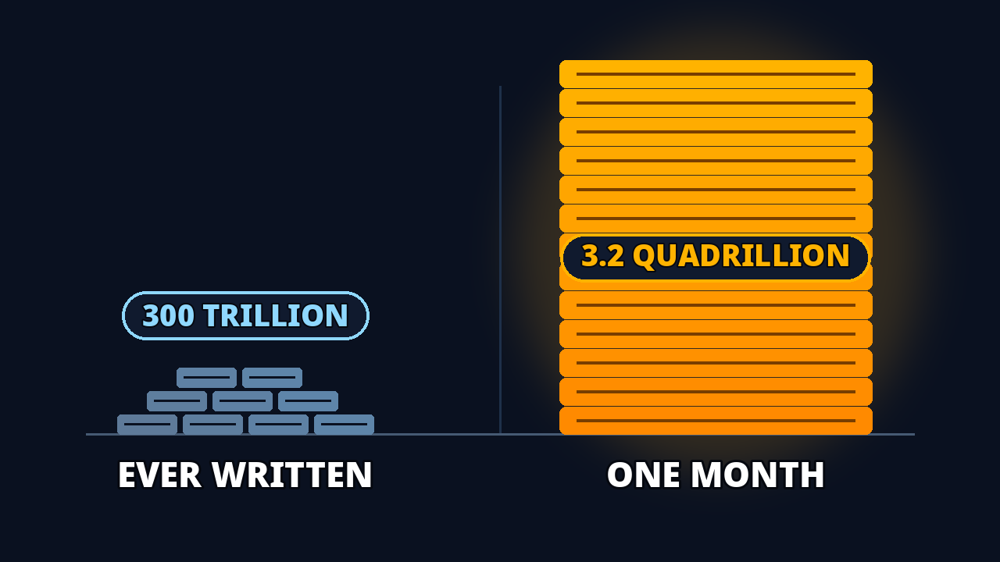
PUBLISH · 2 · E
One Month of Google vs. All Public Writing
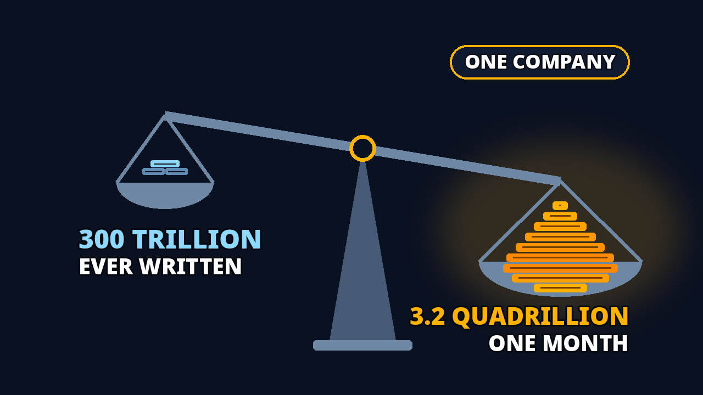
PUBLISH · 3 · C
One Month vs. All Public Writing
RESERVE · 4 · A
3.2 Quadrillion Tokens a Month — Google Alone
RESERVE · 5 · D
Predicting the Next Word Became Agents Doing Jobs
Pair B — rank 1 · PUBLISH · Google Processes More Than All Public Writing
The thought the viewer cannot finish: “300× in two years — WHAT grew?”
Why rank 1: the most concrete promise (dated, numbered, physical), and its payoff is the video’s second beat — early payoffs are what a watch-time test rewards
Pair E — rank 2 · PUBLISH · One Month of Google vs. All Public Writing
The thought the viewer cannot finish: “One month outweighs all of it — whose month, and by how much, really?”
Why rank 2: the same promise as Pair C in a different execution — the comparison staged, not stated. The later rounds raised it to publish
Pair C — rank 3 · PUBLISH · One Month vs. All Public Writing
The thought the viewer cannot finish: “Which company processes, in one month, ten times all public writing?”
Why rank 3: its itch is disbelief, weaker than an open question — but its payoff is the first movement, paid twice. The owner’s recorded preference is this pair ({C}) — recorded as-is; the publish choice is made at publishing
Pair A — rank 4 · RESERVE · 3.2 Quadrillion Tokens a Month — Google Alone
The thought the viewer cannot finish: “It all started in 2017 — started WHAT?”
Why rank 4: the strongest open loop of the five (an unfinished sentence beats a stated fact). Not rank 1: its payoff waits for the origin movement, mid-video. G-6 confinement: its encounter chain BREAKS on the Short — nothing in the first five seconds points at 2017 — so it is first-reserve for the LONG-FORM Test & Compare only, barred from the Short’s packaging and first frame
Pair D — rank 5 · RESERVE · Predicting the Next Word Became Agents Doing Jobs
The thought the viewer cannot finish: “From one word — to all of WHAT?”
Why rank 5: rank 5 for THIS video: its payoff is the final movement, the latest of the five, and the image is the most abstract. It leads with the road — it may fit the series’ maturation video better than this one. G-6 confinement: its chain BREAKS on the Short — second-reserve, long-form only
The standing builds are the ROUND 10 builds (2026-10-30, under the owner’s rulings: countable familiar units · purposeful backgrounds · type first; full record: aesthetic-record-r8.md §5): B — img-r10-B-gen.png (information PASS with the I4 caveat · hygiene 12/12 · aesthetics 66) · E — img-r10-E-gen.png (PASS · 12/12 · 58) · C — img-r10-C-books.png (PASS · 12/12 · 68; measured ratio 11.23 in the 8.5–12.8 band). All three are 16:9; the 9:16 recompositions are a pairs-round item (register N-9), as is the engagement re-score on these builds (N-10). A and D stand on their Round 8 builds as long-form reserves, confined per G-6. The Round 8 detail below is retained as the information plans’ record — the plans are unchanged — but its gate figures certify the Round 8 builds, not the standing ones; the Round 10 gate evidence stands in the record cited above. The aesthetics axis (self-scored vs named references: B 66 · E 58 · C 68) stands below the publish bar; closing that gap is pairs-round work, recorded here so the axis is never invisible.
Pair B’s I4 caveat — disposition (decided): the R8 plan’s stance stands and R10 kept it deliberately: the “300×” numeral carries the claim exactly; the 1-vs-20 bars are a qualitative multiplication marker, not a ratio encoding. The residual risk is named, not hidden: a viewer who counts bars reads ×20. It rides with the pair into the publish test as a named suspect if B underperforms its promise.
Round 8 (2026-10-30), built under the information-design doctrine: title + thumbnail form ONE question (or two, where stated) whose answer is in the video; the thumbnail shows as much real information as it can and withholds exactly ONE thing. Comparisons are drawn TO SCALE — the real ratio for this piece is 10.67:1. The gate record is two-axis, reported separately: information design (I1–I6) above hygiene (T1–T12). Full record: thumbnail-round8-report.md (tab0-work).
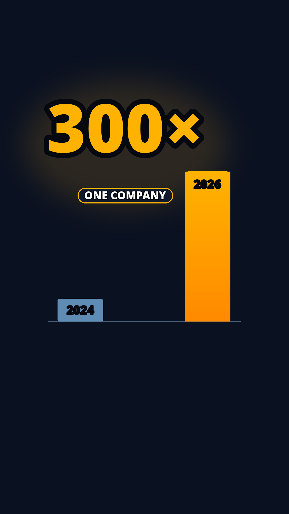
Question count: 2 — Q1: “What grew 300× between 2024 and 2026?” Q2: “How big did it get?”
Shown: the growth factor “300×” as the dominant numeral · two dated markers on one shared baseline — a small 2024 marker and a towering 2026 marker, the year ON each marker · a “ONE COMPANY” chip
Withheld (ONE thing): WHAT grew, and its absolute size — tokens, monthly processing, and the 3.2-quadrillion endpoint appear nowhere in the thumbnail
Title–thumbnail division: the title carries the company (Google), the activity (processes), and a comparison claim; the thumbnail carries the magnitude over dated time and the one-company singularity. Recorded flaw, named not hidden: the title’s verb “processes” half-answers Q1 at category level, so the thumbnail stages the remaining real questions. Duplicated load-bearing facts: 0 · missing: 0
Per-surface dimensions: long-form 1280×720 (16:9) · Short 1080×1920 (9:16), same shown set recomposed vertically: numeral over the two dated markers, chip beneath
Gate v2 record (Round 8): Information PASS (I1–I3, I5; I4 n/a-by-plan — the 300× claim is carried by the numeral itself; the dated markers are schematic by plan) · Hygiene 12/12 PASS, both surfaces · contrast: text pairs 9.68–18.85:1 · edge-touch 0.0
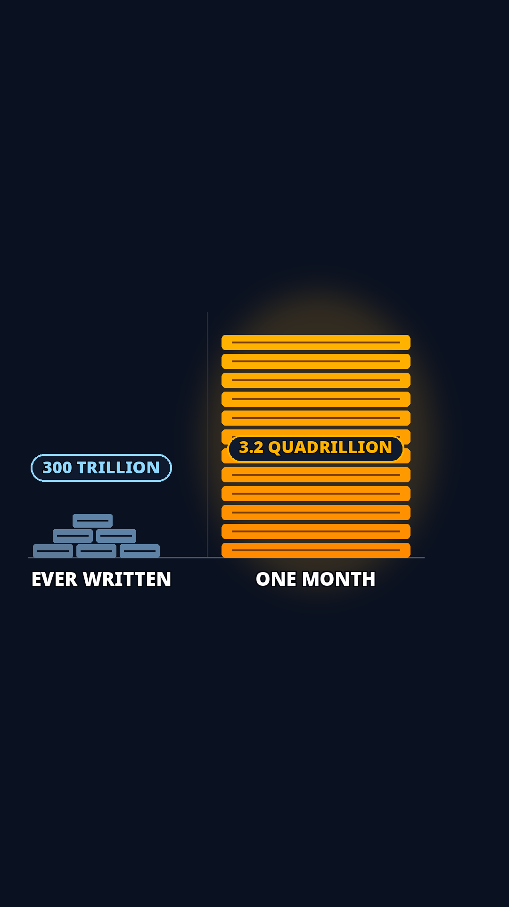
Question count: 1 — “How can one month of Google outweigh all public writing — by ten times?”
Shown: a split ground comparison — LEFT: a resting book pyramid labelled “EVER WRITTEN” with a “300 TRILLION” callout chip · RIGHT: a token tower labelled “ONE MONTH” with a “3.2 QUADRILLION” callout chip · the masses drawn TO SCALE
Withheld (ONE thing): the SCALE itself, until the eye measures it — the title asserts a “vs” but gives no quantities and no ratio; the thumbnail’s measured 10× is the revelation, and the explanation of it is the video’s
Title–thumbnail division: the title carries the company and both spans; the thumbnail carries both quantities and the true mass ratio. Duplicated load-bearing facts: 0 · missing: 0. No “ONE COMPANY” chip — the title already fixes the singularity (“of Google”)
Per-surface dimensions: long-form 1280×720 (16:9) · Short 1080×1920 (9:16), same shown set recomposed vertically: pyramid low on the left of the safe box, tower rising on the right, chips attached
Gate v2 record (Round 8): Information PASS · scale MEASURED 10.49 (16:9) / 10.46 (9:16) against the real 10.67 (band 8.5–12.8) · Hygiene 12/12 PASS · recorded margin: the chips are the set’s smallest text (36 px) and decode as callouts on their masses at feed scale; the question is carried by the masses themselves
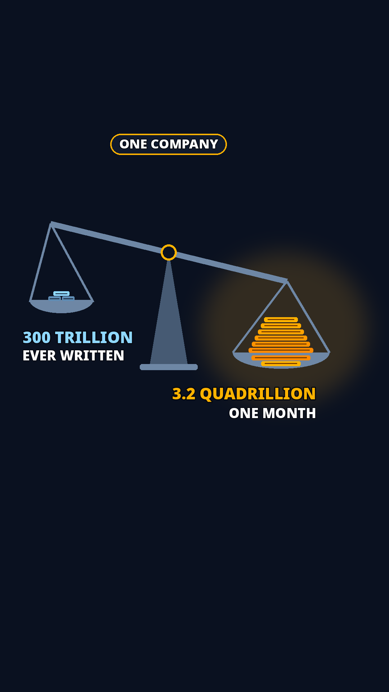
Question count: 1 — “Which company processes, in one month, ten times all public writing?”
Shown: a true balance — LEFT load: books, labelled “300 TRILLION” + “EVER WRITTEN” · RIGHT load: a token heap, labelled “3.2 QUADRILLION” + “ONE MONTH” · a “ONE COMPANY” chip on the month side · the load masses drawn TO SCALE, the month side sitting LOWER
Withheld (ONE thing): the company’s name — present in neither the title nor the thumbnail
Title–thumbnail division: the title carries the two spans and the “vs” frame, no quantities, no company; the thumbnail carries both quantities, the measured 10× mass, and the one-company singularity. The two span names appear in the title and as load labels on the image — axis labels for the two loads. Missing from both: 0
Per-surface dimensions: long-form 1280×720 (16:9) · Short 1080×1920 (9:16), same shown set recomposed vertically: quantity labels over a taller balance, the month side lower, all critical content inside the Shorts safe box
Gate v2 record (Round 8): Information PASS · scale MEASURED 10.63 (16:9) / 10.39 (9:16) against the real 10.67 · Hygiene 12/12 PASS · chain margins ≥ 23.7 px, asserted in the tuner; loads rest in the bowls, no chain crosses a load
Question count: 1 — “What started in 2017 that became 3.2 quadrillion tokens a month?”
Shown: the owner’s verbatim words IN FULL — “IT ALL STARTED IN” as type with “2017” inside the amber pill callout (the sentence reads whole: IT ALL STARTED IN 2017) · the paper card the year belongs to · token chips streaming out of the paper, growing
Withheld (ONE thing): WHAT started — the paper and its mechanism are named nowhere; the card is blank of any title
Title–thumbnail division: the title carries the endpoint and the company; the thumbnail carries the origin year and the paper. Duplicated facts: 0 · missing: 0. Word count 5 — over the T6 hook cap of 4, under the owner-verbatim override (gate I6)
Per-surface dimensions: long-form 1280×720 (16:9) · Short 1080×1920 (9:16), same shown set recomposed vertically: the sentence over the paper card, the pill at its shoulder, chips streaming upward
Gate v2 record (Round 8): Information PASS (I6 PASS — the verbatim override exercised: 5 words, the sentence reading whole on both surfaces) · Hygiene 12/12 PASS, both surfaces
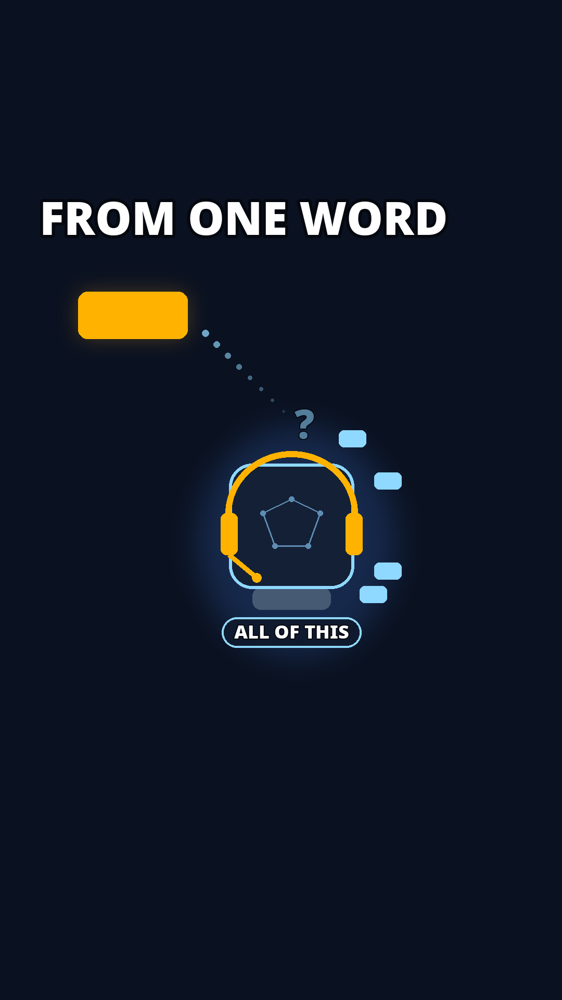
Question count: 1 — “How does predicting one word become agents doing jobs?”
Shown: the two endpoints BIG — a single amber seed chip under the headline “FROM ONE WORD”, and the agent emblem (faceless headset figure in its chip halo) with its endpoint caption “ALL OF THIS” — and the middle staged as THE GAP: a dotted trail that leaves the seed, thins, breaks, and does not arrive; a faint ghost “?” where the explanation would be; empty space between the endpoints
Withheld (ONE thing): HOW one word becomes agents doing jobs — the middle is visibly unexplained; any drawn multiplication mechanism would answer the question the pair exists to ask
Title–thumbnail division: the title carries the arc (predicting the next word → agents doing jobs); the thumbnail stages the endpoints at full size and withholds the middle. The thumbnail’s “ONE WORD” echoes the title’s “the Next Word” — the owner’s directed text for this pair. Missing from both: 0
Per-surface dimensions: long-form 1280×720 (16:9) · Short 1080×1920 (9:16), same shown set recomposed vertically: seed high, the broken trail descending through empty space, the agent emblem low in the safe box
Gate v2 record (Round 8): Information PASS · Hygiene 12/12 PASS, both surfaces · halo ring radius 225 (16:9) / 205 (9:16) audited against the head’s corner distance in the builder; chips float clear of head, band, and cups
· Publish 3 (Archer's standing recommendation, Pass 15.13): B, E, C — three different promises (growth · comparison · scale), which is what a watch-time comparison can actually read. His exported pick so far is C, recorded as his current preference; the publish set is chosen at publishing, from the ranked three. · On the long-form, YouTube's Test & Compare runs the three and reports watch-time share; the winner becomes the standing packaging and the result is recorded back into this file. · In the Shorts feed there is no chosen thumbnail — the first seconds do this work — so there the verification is retention: does the opening hold past the promise the pair made (the figure in 5 s, the growth by beat two)? · Reserves: A (the origin pair) swaps in if a publish pair underperforms its promise; D is held for the maturation video unless you direct otherwise. · Every later change to a pair is a recorded revision here, never a silent swap.
The test’s full decision rule stands in the Publish test section (G-8); the encounter-chain check (G-6) stands behind the pair states above and in Scores & reasoning.
Thumbnail-detail checklist (from the thumbnails record):
Pairs checklist:
Rounds 1–6 record — the earlier sets and their reasoning, kept as history. Their scores were voided on 2026-10-30 (the owner’s verdict on the set: zero — scales not adjusted, numbers not adjusted, words overlapping) and the sets stand condemned; the live record is Round 8 in Thumbnail detail. The pick buttons below are removed — the live pick controls stand in Scores & reasoning and in the viewer (one path per action, G4).
Pair B — rank 1 · PUBLISH · Google Processes More Than All Public Writing
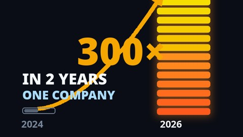
Thumbnail: "300× · IN 2 YEARS · 2024 / 2026 · ONE COMPANY", the column bursting off the frame. The thought the viewer cannot finish: "300× in two years — WHAT grew?" The title names the subject and adds the comparison. Why rank 1: the most concrete promise (dated, numbered, physical), and its payoff is the video's second beat — early payoffs are what a watch-time test rewards.
Standing build: Round 10 — see Thumbnail detail’s currency compartment.
Pair E — rank 2 · PUBLISH · One Month of Google vs. All Public Writing
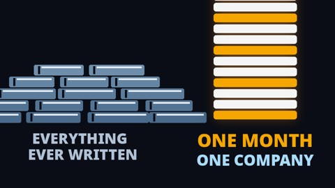
Thumbnail: the comparison staged — a small stack whose drawn label currently reads “EVERYTHING EVER WRITTEN” — over-scope against the register; the pairs round redraws it to the register’s scope — against a tower labeled ONE MONTH / ONE COMPANY. The thought the viewer cannot finish: "One month outweighs all of it — whose month, and by how much, really?" The same promise as Pair C in a different execution — the comparison staged, not stated. The later rounds raised it to publish (90; Passes 15.12–15.13).
Standing build: Round 10 — see Thumbnail detail’s currency compartment.
Pair C — rank 3 · PUBLISH · One Month vs. All Public Writing
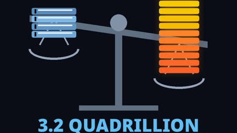
Thumbnail: the figure itself — "3.2 QUADRILLION". The thought the viewer cannot finish: "3.2 quadrillion a month — how, and compared to what?" The title supplies the human yardstick. Rank 3: its itch is disbelief, weaker than an open question — but its payoff is the first movement, paid twice.
Standing build: Round 10 — see Thumbnail detail’s currency compartment.
Pair A — rank 4 · RESERVE · 3.2 Quadrillion Tokens a Month — Google Alone
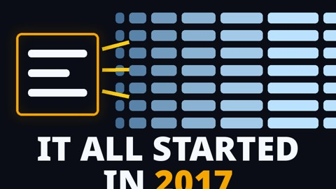
Thumbnail: "IT ALL STARTED IN 2017", one small page under a wall of text. The thought the viewer cannot finish: "It all started in 2017 — started WHAT?" The strongest open loop of the five (an unfinished sentence beats a stated fact). Not rank 1: its payoff waits for the origin movement, mid-video.
Pair D — rank 5 · RESERVE · Predicting the Next Word Became Agents Doing Jobs
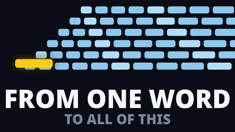
Thumbnail: "FROM ONE WORD — TO ALL OF THIS", a single glowing bar widening into a flood. The thought the viewer cannot finish: "From one word — to all of WHAT?" Rank 5 for THIS video: its payoff is the final movement, the latest of the five, and the image is the most abstract. Recorded migration note: this pair leads with the road — it may fit the series' maturation video better than this one.
Your verdict on the earlier sets — zero — is recorded at the top of this file. What was missing, in your words: curiosity. A bare year with arrows means nothing; an image earns the click when it starts a thought the viewer cannot finish — an unfinished phrase, an unexplained explosion, a number too big to believe. These five are built on exactly those mechanics, with a fuller color palette (cyan, amber, coral, teal on a deep navy field). Each pair below carries its standing score — the /100 figure, re-scored in the iteration rounds (Record, Passes 15.12–15.13); the first scoring's totals (scored of 40) stand in the Record; its per-dimension lines stand in the v15.8 delivery copy. Pairs D and E join the first three in this round — the set of five, ranked as pairs in section 2. Contrast computed from the design colors: white 19.43 · amber 10.83 · cyan 10.11 · coral 6.42 (coral is the floor — still clear for large display text). Each viewed at full size and at a 10% downscale before entering this file; two drawing defects (an overflowing headline, a colliding label) were caught in that viewing and fixed before this delivery.
A · The unfinished phrase (pairs title A)
Text: "IT ALL STARTED IN 2017" — your example, used because it is the best carrier: the sentence starts a story and stops. Started WHAT? One small glowing page sits under a wall of text that fills the sky — the disproportion is visible, the cause is not named. The title carries the answer's scale.
The thought the viewer cannot finish: “It all started in 2017 — started WHAT?”
My engagement score: 88/100 — below the 90 bar; still iterating. Curiosity gap 9 · legibility 9 · pull 8 · promise clarity 8. Gaps to 90: the scene is quiet at feed speed (pull), and the phrase needs its title to land (clarity). Your score is the verdict.
B · The unexplained explosion (pairs title B)
Text: "300× · IN 2 YEARS · 2024 / 2026 · ONE COMPANY" — your example: the years and the multiple, with the two bars making the growth physical (the 2026 column bursts off the top of the frame); the company line was added at your direction in round 4. The image never says WHAT grew; the title names it. A growth with no subject is a question.
The thought the viewer cannot finish: “300× in two years — WHAT grew?”
My engagement score: 91/100 — above the 90 bar. Curiosity gap 8 · legibility 10 · pull 9 · promise clarity 8. The strongest of the five on pull. What caps it: the subject is withheld by design, so the score caps until the title lands. Your score is the verdict.
C · The unbelievable number (pairs title C)
Text: the figure itself, staged as the wonder — "3.2 QUADRILLION". A number this size reads as a claim the viewer wants checked; the title adds the human comparison (all public writing) that makes it mean something.
The thought the viewer cannot finish: “3.2 quadrillion a month — how, and compared to what?”
My engagement score: 89/100 — below the 90 bar; still iterating. Curiosity gap 7 · legibility 10 · pull 8 · promise clarity 9. The clearest promise. Gap to 90: disbelief is a weaker itch than an open question. Your score is the verdict.
Record note (design-data loop, 2026-10-30): the round-5 redraw dropped the second line the earlier design carried (TOKENS · EVERY MONTH), and ONE COMPANY was never drawn for C — the text here described three lines the image does not carry. The text now matches the image as it stands; restoring fuller thumbnail text is a pairs-round item.
D · The road, widening (pairs title D · reserve)
The thought the viewer cannot finish: “From one word — to all of WHAT?”
My engagement score: 86/100 — below the 90 bar; still iterating. Curiosity gap 8 · legibility 9 · pull 8 · promise clarity 7. Gaps to 90: the most abstract image of the five, and its payoff is the video's last movement. Recorded as the reserve with a migration note (section 2): it may belong to the maturation video.
E · The comparison, staged with labels (pairs title E · publish)
The thought the viewer cannot finish: “One month outweighs all of it — whose month, and by how much, really?”
My engagement score: 90/100 — at the 90 bar. Curiosity gap 6 · legibility 10 · pull 8 · promise clarity 10. Its weakness: the weakest open loop of the five — the image nearly closes its own story; its itch is disbelief. It shares Pair C's promise in a different execution — and outscored it in the later rounds.
Over 3.2 quadrillion tokens processed every month.
And that is Google alone.
Its monthly processing grew more than 300 times in two years.
To understand the scale, consider this: the usable public text written by people is estimated at 300 trillion tokens.
That's about a tenth of Google's monthly volume.
Let me repeat that again.
Every month, Google alone processes more than ten times the estimated usable public text written by people.
Every search comes back as a written answer.
Every voice becomes text; every long document, a summary.
Millions of hours of speech become text.
Billions of searches are answered in written words.
Words written in one language are read in another.
One stream of tokens runs through all of it — like electricity through machines.
We, as a civilization, with our machines, are now processing language at this scale.
If industrialization multiplied humanity's physical power, this could be the start of an era that multiplies humanity's cognitive power.
What set this in motion? The trail leads back to a paper from 2017: Attention Is All You Need.
By then, building AI models that could understand and translate language had long been a holy grail.
Learning to predict the next word offered a way to learn the patterns of language.
So, a team at Google built a new architecture around attention.
It could learn which earlier words mattered and pay more attention to them when predicting the next one.
The Transformer was born: a mathematical structure that could learn from vast collections of text.
In this series, we will learn how one ability grew into another: how predicting the next word became agentic systems doing jobs.
We will trace how it matured, from 2017 to today — and build an intuitive understanding of it: how to use it, and how to live through it.
The frozen baseline (the owner’s standing rule, 2026-10-30 ~23:05 ET). The Tab 0 transcript is the text as it stood at the END of Tab 0 — it does not update as the text evolves (the earlier update-as-it-evolves instruction is revoked). Tab 1 adjusts delivery only — wording-for-delivery, voice, pauses, music — never content. Every later iteration is compared against this reference, so maintaining the content vs deviating from it is always visible. The reference: 23 lines / 303 words, confirmed complete by the owner in the main chat (2026-10-30 ~04:28 ET — “Okay, I already accepted the transcript, so start the next one.”); Tab 0 closed at the v17 push. Machine forms: tab1-work/confirmed-text.json (the v18 text of record) · tab0-work/tab0-end-reference.json (the frozen copy) · tab0-work/tab0-end-reference.md.
Counting note. 303 words counts tokens containing a letter or digit — the method of the text’s own word array. A naive whitespace split reads 305: two standalone em-dashes (T4, A2) count as tokens; they are punctuation, not words — a counting-method difference, no text difference. The same tokenisation explains the later figures: the crowned text’s headline 326 counts its standalone dash token (325 by the reference method), and the adopted text’s headline 338 stands under the same records’ headline convention — the plain-split convention of every prior headline count in this piece (303 / 318 / 326), which counts A2’s standalone dash as a word — over 337 alphanumeric words (direct count 337; TOK 337); the 1-word delta between the headline and the alphanumeric count is A2’s standalone dash. Deviation counts below use the reference method throughout.
Deviation A — the crowned text (tab1-work/confirmed-text-v23.json), Tab 1’s working text until the adoption. 24 lines / 325 words by the reference method (326 in the record’s count): 16 lines unchanged · 7 changed · 1 added · +22 words. Changed: P3 (gains “by”) · P6 (“say” for “repeat”) · T4 (the owner’s electron-stream parallel) · P8 (gains “So,”) · P12 (“into” for “to learn”) · P14 (“next word” for “next one”) · P15 (the owner’s “a model of a language”). Added: BR — “And here is what it does: every token of it goes to work.” Crowned: the evolved text was checked by the owner 2026-10-30 ~17:54 ET and re-asserted ~18:55 ET — 24 lines, 326 words, all CONFIRMED (confirmed-text-v23.json). Every step of this deviation was owner-ordered or owner-crowned (transcript-correction-record.md); it was the text Tab 1 delivered from until the owner’s adoption of Deviation B (2026-10-30 ~23:17 ET) made the adopted text the working text — it is not, and is no longer presented as, the Tab 0 transcript. Full line-aligned diff: tab0-work/tab0-reference-diffs.md.
Deviation B — the editorial candidate, ADOPTED as the text of record (tab1-work/confirmed-text-v24.json) — Tab 1’s working text. Editorial Pass #1 (2026-10-30) required seven changes; the disposition (tab1-work/editorial/editorial-disposition-1.md) answers four of them in the text. Measured against the reference the adopted text reads 24 lines / 338 words in the records’ headline count (337 by the reference method): 12 lines unchanged · 11 changed · 1 added (BR, inherited) · +34 words by the reference method. Its own four changes beyond the working text: P2 (the attribution tail “— by Google’s own count”) · P7 (the frame tail “— the same words, passing through again and again”) · U1 and U2 (the absolutes softened, “Every” → “A”). This CONTENT deviation was ADOPTED by the owner’s verdict (2026-10-30 ~23:17 ET — the updated version heard whole, in one play; action #143 CLOSED): it is the text of record (confirmed-text-v24.json) and Tab 1’s working text, and master-v24 is built from it as a reference mix (tab1-work/tab1-verification-v24.md). Editorial Pass #2 (under reviewer-instruction v2) runs on the adopted text — the owner’s standing condition on the adoption.
This section’s audio. The transcript popup audio is regenerated in this round from the REFERENCE text — the text on the surface above (106.54 s · −29.12 LUFS · ASR 0.9871 (2 diffs, both adjudicated recognizer artifacts)) — so what the section plays is the frozen text, not the working text. Tab 1’s masters are untouched.
Ending — Variant A chosen by Hadi (2026-10-30); B and C retained as the record. The ending had to carry three elements — (1) ABILITY GROWTH: predicting the next word, grown into agentic systems doing jobs; (2) MATURATION: from 2017 to now; (3) the viewer’s INTUITIVE UNDERSTANDING: how to understand it, use it, and live through it — plus the invitation to follow the series. Variant A stands on the surface as the transcript’s ending (the A1+A2 slots). The transcript is confirmed complete by the owner (2026-10-30, main chat; transcript-correction-record.md). Tab 1 — the audio layer — stands in this file’s Audio tab.
Variant A — tightened original · CHOSEN — standing on the surface
In this series, we will learn how one ability grew into another: how predicting the next word became agentic systems doing jobs. We will trace how it matured, from 2017 to today — and build an intuitive understanding of it: how to use it, and how to live through it.
Variant B — growth arc · retained as the record
It started as one ability: predicting the next word. In this series, we follow it growing up — across nearly a decade, from a 2017 paper to the agentic systems doing jobs today — until it becomes intuitive: how it works, how to use it, how to live through it. Follow the series, and build that understanding with us.
Variant C — the door · retained as the record
One ability became another. Predicting the next word grew into agents doing jobs — and it is still growing. This series follows that growth, from 2017 to now, and makes it intuitive: what it is, how to use it, and how to live in the world it is building. Come build that understanding with us.
Seed (corrected 2026-10-29, on your identification): the ORIGINAL opening prose — WO-A, explainer packet variant "opening-hook-59", your text verbatim, 17 lines, 237 words. Source of record: the migration tree's source script (hidden_files/migration/wo-a/layer-2/transcript/source-script.md), whose preservation rule is: narration verbatim, segmented at sentence boundaries — nothing rewritten, added, or cut. Status: DRAFT ZERO — the transcript stage selects and compresses from it; it does not start from a compression. Every line is editable here.
V-1 · The 2026-10-28 consolidation (14 lines, 145 words). A deliberate rewrite against retention evidence: rate-first hook ("One billion tokens, every second"), the comparison cut to once, the origin compressed to two lines, the series close replaced by the ownership question, the workshop promise, and the Academy ending ("Follow Hadosh Academy — and build your own harness"). Full text: the frozen tree's transcript record.
V-2 · The 2026-10-29 v4 restructure (13 lines, 137 words). V-1 re-ordered under your hook decision (figure first, the rate line removed): the figure, the growth, the comparison once, the lifetime line, the framing question, the paper, the mechanism, the analogy, the model as electricity, the layer, the ownership question, the workshop promise, the Academy ending. This was the seed in Tab 0 v7 — the wrong seed, corrected here.
The fitted arrangement’s containers, with the draft-zero lines in their record boxes — the transcript stage’s working record. The adopted movement map and the budget record stand in Beat map. The boxes carry the working arrangement as it stood at the crowning (v24) — the record of Tab 1’s working text in its containers, not the frozen reference: the Tab-0-end reference stands on the surface above.
Read-only since v28 (RC-18): the transcript is frozen at Tab 0’s close — the text of record — so the boxes below stand disabled, each carrying that reason in its title. They remain as the arrangement’s working record; they are not an editing surface, and nothing typed in them could ever change the frozen text. (The export’s edited-line leg reads a data-orig attribute no box carries — an edit here could not even leave the device.)
P1 (7 words)
P2 (5 words)
Total 12 — FITS.
P3 (12 words)
P4 (19 words)
P5 (8 words)
P6 (5 words)
P7 (17 words)
Total 60 — OVER the Short capacity by 30. The block carries the original's deliberate repeat (P6–P7): the ratio, said twice so it lands. A decided feature of the original, not an accident.
P8 (15 words)
P9 (19 words)
ADDED 2026-10-29, your direction: the tangible beat — what the 3.2 quadrillion is made of, in three areas people can picture, with the electricity image in one line. It stands after the era line and before the origin; the fitted order is otherwise unchanged.
Bridge — BR (13 words) · added 2026-10-30, your pick; its wording finalized by your combination, 2026-10-30
T1 (7 words)
T2 (8 words)
T3 (9 words)
T4 (19 words)
ORDER DIFFERENCE, recorded: the prose states the era BEFORE explaining its origin (the origin then answers "what set this in motion?"). The architecture (section 3) places the stakes function after the genesis. Part of your architecture judgment.
P10 (19 words)
P11 (17 words)
P12 (14 words)
P13 (11 words)
P14 (18 words)
P15 (17 words)
Total 95 — OVER the Short capacity by 40. The original's genesis is FULL: the paper, the holy grail, prediction, the team, attention, the Transformer. (The "empty genesis containers" in the earlier Tab 0 were the consolidation's cuts, not the original's gaps.) The prose's mini-But is implicit — the holy grail is the decades-long difficulty; there is no wall-of-rules line.
EMPTY in the original. The prose has no ownership beat — no layer, no "who owns it". That turn exists only in the variants below (the consolidation invented it). Whether the Short builds the But as new writing at the transcript stage is part of your architecture judgment.
Disposition (2026-10-30): the architecture judgment landed — the ownership But is formally rejected (Story section); this container stands as the draft-zero record.
P16 (18 words)
P17 (19 words)
Total 37 — OVER by 13. The original's close is a series promise: prediction leads to agentic systems doing a job; the technology matured over nearly a decade; build an intuitive understanding of how to use it. The Academy build-your-own-harness ending is NOT in the original — it lives in the variants.
The adopted movement map — the source of the surface’s paragraph groups, counted on the Tab-0-end reference (the frozen text on the surface): 1 · Cold open — P1, P2 (12 words) · 2 · The scale passage — P3–P7 (60) · 3 · The change made tangible — U1, U2, T1–T4, P8 (68) · 4 · The era turn — P9 (19) · 5 · Origin, the trailer way — P10–P15 (95) · 6 · Title + invitation — the ending slots, carrying Variant A as chosen (49). Total 303 words, 23 lines. (Tab 1’s working text deviates from this map’s text — measured in the Deviation compartment.)
How draft zero and the architecture were fitted (fit iteration, then the ALIGNMENT CORRECTION of 2026-10-29 18:50 ET). Survival: 204 of the prose's 237 words reach the fitted piece (86%); with the Uses lines and the tangible beat, the fitted piece totals 248 words. Dropped, with reasons: P4 (19 w — its archive setup is restated tighter by P5 + P7), P8 (14 w — an era restatement; P9 carries era + stakes in one line). Added: the uses beat (2 lines, NEW — your directed addition, derived in the 17:59 derivation table) · the tangible beat (4 lines, T1–T4, NEW 2026-10-29 — your direction; homed in AND-3 · The Era). Removed in the alignment correction: the ownership graft (G1–G5, 57 w) — it served the superseded objective, not this transcript; its text lives in variant V-1. P17 now stands in full, as written. Order follows the corrected architecture (section 3).
AND-1 · The Number (53 w): P1 · P2 · P3 · P5 · P6 · P7 — figure, growth, the comparison said twice.
AND-2 · The Uses (17 w, NEW): U1 "Every search comes back as a written answer." (8) · U2 "Every voice becomes text; every long document, a summary." (9)
AND-3 · The Era (19 w + the tangible beat, 37 w): P9 — the stakes analogy; T1 · T2 · T3 · T4 — what the scale is made of (added 2026-10-29, Hadi's direction).
AND-4 · The Origin (95 w): P10 · P11 · P12 · P13 · P14 · P15 — hinge, grail, prediction, team, attention, Transformer.
THEREFORE · The Road (37 w): P16 (18) · P17 (19, in full) — prediction leads to agentic systems doing a job; the series teaches how it matured and how to use it.
Fitted total: 248 words ≈ 89 s at the prose's own published pace (2.80 words/s) to ~102 s at the canonical build's pace (2.43). The transcript tab finalizes wording; this arrangement is Tab 0's fitted proposal, not the locked transcript.
Draft zero alone: 237 words ≈ 85 s at the prose's own published pace (2.80 words/s) to ≈ 98 s at the canonical build pace (2.43); its own published film ran 84.5 s. D-1 (open at the time) YOUR CALL carried Tab 0's recommendation, strengthened by the alignment correction: with the graft gone, the fitted piece runs 248 words ≈ 89–102 s — the original's own runtime class, nearly exact. Recommendation: accept this class; deeper cuts would have to come out of the genesis or the repeat, the two places the earlier compression cut and was judged for it. Recorded openly; nothing pre-cut. Later record: D-1 was abolished as a decision (2026-10-29, the derivative rule) — length is a readout, and no call on it stands open.
Correction of record, 2026-10-30. The 248-word restructured text that stood in this section is VOID: its re-cut dropped P4 and moved P5 against P3, so “That’s about a tenth” pointed at Google’s own processing — a false claim. The surface carries the corrected text: draft zero verbatim from source-script.md (hidden_files/migration/wo-a/layer-2/transcript/source-script.md) + U1, U2, T1–T4 placed after P7, before P8 — the owner’s placement, itself corrected the same morning (the first correction split the scale passage between the comparison and its repeat). P14 stands at its true source wording; an earlier paraphrase of it was caught by mechanical diff against the source and corrected. Full record: transcript-correction-record.md (tab0-work).
The Tab 0 text of record is the frozen reference above — its machine form is tab1-work/confirmed-text.json (the v18 text of record; frozen copy tab0-work/tab0-end-reference.json). Tab 1’s working text carries two forms — the reading form and the synthesis form (stress + delivery markup) — both in tab1-work/confirmed-text-v24.json (the adopted text; confirmed-text-v23.json stands as the prior record); Tab 1 builds from the synthesis form and verifies against the reading form. The deviation between the two texts is measured in the Deviation compartment (tab0-work/tab0-reference-diffs.md).
State: the ending is chosen — Variant A, the owner’s pick (2026-10-30) — and stands on the surface. The transcript is confirmed complete by the owner (2026-10-30, main chat; transcript-correction-record.md). Tab 1 — the audio layer — stands in this file’s Audio tab.
C2 disposition — CLOSED (iteration 3): the section audios were ASR-audited against the current sections (five of the six wired files FRESH; titles proven stale) and the three proven-stale audios (objective, transcript, titles) regenerated from the current sections’ own summary text, word-diffed and ASR-verified (tab1-work/section-audio-audit-s1.md; tab1-work/section-audio-regeneration-s2.md). No section audio now narrates a superseded summary.
F1 · 3.2 quadrillion tokens a month — Google
F2 · 9.7 trillion (2024) → 480 trillion (2025) → 3.2 quadrillion (2026)
F3 · All usable public text ≈ 300 trillion tokens
F4 · “Attention Is All You Need” — 2017 — Vaswani et al.
F5 · More language than a lifetime of reading
F6 · The electron-stream parallel (T4) — the piece’s chosen parallel, not a factual claim
F1 · 3.2 quadrillion tokens a month, Google. Sundar Pichai, Google I/O 2026, as carried in the Academy's content packet. Single source: the company's CEO, on stage. The piece states it as Google's figure ("Google alone") — the honest frame.
F2 · Trajectory 9.7 trillion/month (2024) → 480 trillion (2025) → 3.2 quadrillion (2026). Same source family. Arithmetic recomputed: 3.2×10^15 ÷ 9.7×10^12 ≈ 330 — "more than three hundred times in two years" holds.
F3 · All usable public text ≈ 300 trillion tokens. Epoch AI estimate, 2024. Arithmetic recomputed: 300×10^12 ÷ 3.2×10^15 ≈ 0.094 — "about a tenth of one month" holds.
F4 · "Attention Is All You Need," 2017, Vaswani et al. The Transformer paper. Bibliographic fact.
F5 · "More language than a lifetime of reading." A rhetorical comparison, checked directionally: an extreme reading lifetime (≈250 words/minute, 16 hours a day, 80 years ≈ 7×10^9 words) sits ~460,000× below one month. Conservative; safe. (Corrected in pass 9 — the baseline's figure was wrong; the true arithmetic makes the line more conservative, not less.) Status: NOT USED IN THIS PIECE — no line of the confirmed text makes this comparison; the entry is retained for the long-form packet, where the lifetime line's home is. Its arithmetic stands as checked.
F6 · The electron-stream parallel (T4) — "If the electron stream was a general form of energy, the token stream is a general form of intelligence." The piece's chosen parallel (the owner's wording), not a factual claim: two general-purpose streams, each defined by flowing through everything. It supersedes the earlier "model is the electricity" metaphor and carries no fairness clause — the crowned text makes none.
F7 · "Millions of hours of speech become text" (T1). An order-of-magnitude scale claim, status: rhetorical scale, bounded by F1 — a month processing 3.2 quadrillion tokens necessarily includes speech-to-text at far beyond millions of hours; the line claims a floor, not a measurement. No separate source is carried because the claim is entailed by F1's volume at any plausible mix.
F8 · "Billions of searches are answered in written words" (T2). Same status as F7: order-of-magnitude scale claim entailed by F1's volume (Google's public search volume has been reported in the trillions of searches per year for a decade; "billions answered in written words" is a floor). Carried as rhetorical scale, not as a measured count.
F1 is stated as the company’s own figure — Sundar Pichai, on stage at Google I/O 2026 — because a single-source number is carried as its maker’s claim (“Google alone”), not as a measured fact.
F6 is carried as a chosen parallel, not a factual claim: the piece never asks the viewer to believe it, only to picture with it — which is what keeps a parallel out of the fact register’s evidence column.
F5’s lifetime-of-reading baseline was corrected in pass 9 (directional check: an extreme reading lifetime sits ~460,000× below one month — conservative, safe); the corrected line stands in Evidence.
Corrections: if any figure in this register is found wrong after publish, the correction lands HERE first (entry amended, dated), then on the artifact: the description gains a "Correction:" line with the timestamp of the corrected line (the platform's correction convention), the pinned comment is edited if it repeats the claim, and the Rights table's standing condition 3 pattern is followed — never patched silently at the upload form.
Scale — 3.2 quadrillion tokens a month, Google alone.
Growth — monthly processing grew by more than 300 times in two years.
Measure — all usable public text ever written 300 trillion tokens — a tenth of one month.
Uses — searches return written answers; voices become text; documents become summaries; words cross languages — the uses are one stream’s work, the token stream introduced by the bridge line and named by T4.
Purpose — what the processing is for: every token of it goes to work.
Era — this could multiply cognitive power as industrialization multiplied physical power.
Origin — a 2017 paper made predicting the next word a way to learn language; attention built the Transformer.
Road — predicting the next word leads to agents doing jobs; the series follows its maturation.
Cold open. Machines now process language at a scale of 3.2 quadrillion tokens every month (P1). That is one company — Google alone, not the whole industry added together (P2).
The scale passage. This scale is new, and it arrived fast: the monthly volume grew by more than 300 times in two years (P3). Everything people have ever written, that is public and usable, adds up to about 300 trillion tokens (P4). One month of Google’s processing is about ten times that entire stock — the written stock is roughly a tenth of a single month (P5, its referent P4 immediately before it). The comparison is worth hearing twice, and the piece says so: the repeat is the learning device (P6, P7).
The change made tangible. The movement opens on what the processing is FOR: “And here is what it does: every token of it goes to work” (BR). A search now comes back as a written answer, not a list of links (U1). Voices become text, and long documents come back as summaries (U2). At scale, speech itself is being written down (T1); questions are answered in writing, billions of times (T2); language barriers are crossed by the same stream (T3). One thing runs through all of it, in the crowned parallel: “If the electron stream was a general form of energy, the token stream is a general form of intelligence” (T4). This is a civilization-level fact, not a company statistic: we, with our machines, are now processing language at this scale (P8).
The era turn. The stakes are historical: just as industrialization multiplied humanity’s physical power, this could be the start of an era that multiplies humanity’s cognitive power (P9).
Origin. Something this big has a findable beginning: a paper from 2017, “Attention Is All You Need” (P10). The problem it answered was old and famous inside the field — a holy grail (P11). The trick that cracked it: teach the system to predict the next word, and it learns the patterns of language (P12). A team at Google built a new architecture around one idea — attention (P13). Attention, in plain terms, is learned relevance: the architecture learns which earlier words mattered, and pays more attention to them when predicting the next word (P14 — the full original line; the mechanism is named here, its working is the series’ to teach). That architecture has a name — the Transformer — a model of a language, with one defining appetite: it can learn from vast collections of text (P15).
Title + invitation. Where the road leads, in the chosen ending (Variant A): predicting the next word grew, step by step, into agentic systems doing jobs — one ability grown into another. What the series will give them: that growth traced from 2017 to today until it becomes intuitive — how to use it, and how to live through it (the ending slots).
Full map: learning-map-rederived.md (tab0-work), which closes gap G-7.
Scale — Comments restating the figure or the comparison in the viewer’s own words; the pinned question’s answers.
Growth — Comments citing the 300× / two-years growth unprompted.
Measure — Answers to the pinned comment’s closing question (“which side of that scale were you on”) that use the tenth/ten-times relation.
Uses — Comments naming a use from U1–T4 as their own experience.
Purpose (BR) — Comments describing the processing as work done for them (answers, summaries, translations) rather than as abstract compute.
Era — Comments taking up the physical→cognitive power parallel.
Origin — Comments naming the 2017 paper or prediction as the start.
Road — Follows + playlist adds + comments anticipating the series’ next piece.
Read at the publish gate (first-viewer evidence) and the 7-day scoreboard beside the G-8 review; absence of evidence for a learning is recorded against the map, not smoothed over.
The method is expectation-first: the learning is stated in viewer terms BEFORE production, and the finished video is verified against it — a stated learning with no moment that delivers it is a defect; a stretch delivering no stated learning is a cut/compress candidate. Each learning is checked twice: sound-off (the picture + card for its line) and sound-on (the line as spoken).
Ownership is NOT this video’s learning: no line in the corrected text carries it. An earlier map’s ownership gap and its graft were removed by the alignment correction and stay removed; ownership is taught by “Who Owns Your Harness?”, this piece’s pair in the harness lane. How attention works mechanically is likewise named (Origin) but not explained — by design: it is the main payoff, transferred to the series by name.
The map this section carried at v16.9 was written against the superseded nested-ABT containers and claimed PASS while citing lines the operative text had dropped (gap G-7). It stands below as history; the surface and Line evidence are the re-derived map (2026-10-30), built on the corrected transcript.
Citation-change table #2 (2026-10-30, on the crowned text — tab0-completion-decisions.md D-G):
1 · BR — absent from the map → ADDED — surface learning 8, “Purpose”: what the processing is FOR — every token goes to work; Line evidence cites BR (“And here is what it does: every token of it goes to work”) as Movement 3’s opening learning. Why: the crowned BR is a confirmed line carrying a learning no other line carries; a map that skips it fails its own said=shown rule.
2 · T4’s learning via “a single stream of tokens — the way electricity runs through machines” → RE-CITED to the crowned parallel: “If the electron stream was a general form of energy, the token stream is a general form of intelligence” — the learning sharpens: two general-purpose streams, each defined by what flows through everything. Why: T4 is the owner’s wording; the old simile is superseded text.
3 · The surface “Uses” line (“…one stream runs through all of it”) → RE-WORDED to the crowned form: the uses are one stream’s work — the token stream introduced by BR and named by T4. Why: same supersession as #2, on the surface list.
4 · P15’s learning (“…it can learn from vast collections of text”) → EXTENDED: the Transformer is “a model of a language” that could learn from vast collections of text — the name carries what the thing IS (a model of a language), not only what it eats. Why: the crowned P15 is the owner’s phrase; “a model of a language” is its distinctive claim.
5 · P6 cited as “Let me repeat that again” → CITATION UPDATED to “Let me say that again” — the learning (the repeat as a learning device) is unchanged. Why: crowned wording (owner pick #134/#135 round).
6 · A2’s learning → UNCHANGED — verified: “how to use it, and how to live through it” stands in both the map and the crowned line. Why: checked, not assumed.
7 · P3’s evidence (“grew more than 300 times”) → CITATION UPDATED to “grew by more than 300 times”. Why: crowned wording.
AND-0: language processing runs at 3.2 quadrillion tokens a month — one company. (P1, P2)
AND-1: it grew more than 300 times in two years (P3); all usable public text ever written ≈ 300 trillion tokens (P4) — about a tenth of one month (P5), said twice so it lands (P6, P7).
Era / stakes: civilization, with its machines, now processes language at this scale (P8); this could be the era that multiplies cognitive power as industrialization multiplied physical power (P9).
AND-2: what set it in motion was a paper from 2017 (P10); understanding and translating language had long been the field's holy grail (P11); predicting the next word offered a way into language's patterns (P12); a team at Google built a new architecture around attention (P13); attention means learning which earlier words matter (P14); the Transformer learns from vast collections of text (P15).
AND-3: predicting the next word leads to agentic systems doing a job (P16); the technology matured over nearly a decade (P17).
AND-2 (fitted): what this processing IS in the viewer's own week — searches answered in writing, voices turned to text, long documents summed up. (U1, U2 — new lines, derived.)
THEREFORE · The Road: predicting the next word leads to agentic systems doing a job, and this series teaches that road — how the technology matured over nearly a decade, and how to use it. (P16, P17 — both present in draft zero, in full.)
Ownership is NOT this video's learning. An earlier map carried it as a gap and the fit filled it with a graft; the alignment correction removed both the gap and the graft. Ownership is taught by "Who Owns Your Harness?" — this piece's pair in the harness lane. This video's learnings are the scale, the uses, the era, the origin, and the road — each with its lines, checked in the alignment section.
Objective ↔ Transcript — PASS
Architecture ↔ Transcript — PASS
Pairs ↔ Objective — PASS
Learning ↔ Lines — PASS
Hook ↔ Objective — PASS
Arrangement ↔ Architecture — PASS
Why this family exists: the per-element checklists verified each element on its own — and an objective could pass its own checklist while contradicting the transcript, because no item checked the elements against EACH OTHER. This family is that check: six pairings, each with its mapping named in Evidence.
Its proof: both superseded objectives fail item 1 — each needed material the transcript does not contain.
Items 1–6 are Tab 0 stage gates; the publish gate itself is the Objective section’s conformance checklist (until every one of its items passes, confirmed by Hadi, Archer, or Dot, this video cannot be published).
Re-run trigger: any change to a named element re-runs its items — a changed transcript line re-runs items 1, 2, 4 and 6; a changed pair re-runs item 3; a changed hook re-runs item 5.
This family was born in the alignment correction (2026-10-29): the superseded objective’s contradiction with the transcript was found by reading across sections, not by any checklist — the family exists so the next one is found by a check.
Re-run on the crowned text (2026-10-30), per the family’s own trigger — a changed transcript line re-runs items 1, 2, 4, 6: item 1 — PASS, re-verified (clause map on crowned IDs: scale → P1–P3, P5, P7 · new era → P9 · its start → P10–P15 · invitation → A1+A2, discharge structure D-B; no clause needs material the text lacks; ownership appears nowhere, as the objective requires) · item 2 — PASS against the records (the crowned line order matches architecture-rederived.md’s movement map exactly, BR in Movement 3; the page’s own beat-map citation lands with the v25 architecture patch — until then the item’s page citation was the one stale surface, named here rather than smoothed over) · item 4 — PASS on the D-G re-verification (citation-change table #2: 7 entries — 1 added, 2 re-cited, 1 extended, 1 updated, 2 verified unchanged in substance) · item 6 — noted, no re-run owed: the fitted arrangement it names is superseded history; the operative arrangement↔architecture pairing is item 2’s, and its text is annotated to say so.
Objective — CONFIRMED
Story — DECIDED · Candidate B
Transcript — Tab-0-end · Variant A chosen · 303
Pairs — RANKED · choice at publishing
Publish gate — NOT PASSING · awaits finished video
Carried — C2 audio refresh · phone-width evidence
Editorial Pass #2’s re-review #2 (2026-10-31, focused on RC-6, run on the live v28 page): PUBLISH WITH REQUIRED CHANGES — Accuracy 92 · Clarity 90 · Hook 92 · Pacing 85 · Credibility 89 (the re-review before it: 93 · 90 · 92 · 85 · 89; the one-point Accuracy move is the reply-seed find below). RC-6 is PARTLY CLOSED: the v28 round’s page-text closures verified verbatim on the served page, and the claim’s two survivals in page text stand as marked references to the thumbnail’s drawn label, which the pairs round redraws. The regression hunt found the claim’s shape once more — the pinned plan’s drafted reply overstated its source’s scope — and the v29 round fixes that line: the reply now credits Epoch AI’s estimate at the register’s scope. Standing residue: RC-2 (Tab 2 round), RC-4 and RC-6’s image half (pairs round), and the structural pacing flaw the desk priced in Pass #2. The editorial rows stand NOT PASSING.
Dashboard Review #2 (2026-10-31, the re-review of the v27 rebuild): PASS WITH REQUIRED CHANGES — Progressive disclosure 84 · Dyslexia readability 85 · Control truth 74 · Decision focus 80 · The two named defects 72 (Review #1: 68 · 58 · 55 · 62 · 35; the owner’s baseline was “under 50”). Its required changes NC-1..NC-5 and standing RC-18 are answered in the v28 round: chunk players rewired and ASR-verified; the timing probe re-scoped to its word; the stylesheet collapse finished; MU-12’s settle control landed in Tab 1; the stale marked texts regenerated; the frozen transcript’s edit boxes disabled with their reason. Editorial Pass #2’s re-review landed the same night (93 · 90 · 92 · 85 · 89) with new RC-6; its page-text half is closed at v28, its image half riding the pairs round. Dashboard Review #3 has since re-checked this build (2026-10-31): PASS WITH REQUIRED CHANGES — Progressive disclosure 86 · Dyslexia readability 87 · Control truth 86 · Decision focus 85 · The two named defects 76 — all six re-checks (NC-1..NC-5 + RC-18) CLOSED on the reviewer’s own instruments; its one forward item, NC-6 (neither clone row matches the settle predicate — the clone ear judgment needs its landing worded before Dot’s master arrives), is owed by the clone-landing round. The editorial figures above are re-review #1’s; re-review #2 (92 · 90 · 92 · 85 · 89) superseded them the same night — its record stands in this compartment — and the v30 round carries its figures on the editorial rows.
Dashboard Review #1 (2026-10-31, the dyslexia-UX reviewer the owner ordered): verdict FAIL — Progressive disclosure 68 · Dyslexia readability 58 · Control truth 55 · Decision focus 62 · The two named defects 35 (the owner’s own score was “under 50”). 18 required changes (RC-1..RC-18). The v27 round answers them in the review’s build order; RC-18 (the frozen/editing contradiction) stands as named residue in the shipment record. Dashboard Review #2 re-checks this build against the same objections.
The transcript-reversal round. The owner’s order (~23:05 ET) revokes his earlier instruction to update Tab 0’s transcript as the text evolved: the Tab 0 transcript is FROZEN at Tab-0-end, Tab 1 is delivery-only, and every later iteration is compared against the frozen reference. Executed: the Transcript section’s surface again carries the v18 confirmed text (23 lines / 303 words — owner-confirmed 2026-10-30 ~04:28 ET; Tab 0 closed at the v17 push, commit ebbb69e4; machine source tab1-work/confirmed-text.json; frozen copy tab0-work/tab0-end-reference.json). The count reconciliation is recorded with it (303 = the text’s own word-array method; a naive split reads 305 on two standalone em-dashes; the crowned 326 is the records’ headline count under the same convention — 325 by the reference method; the adopted text’s headline 338 stands under the records’ headline convention — 337 by the reference method, the delta being A2’s standalone dash). The tile reads 303 words; both beat maps recount to the reference (12 · 60 · 68 · 19 · 95 · 49 = 303); the confirmation, preservation, ending, selection and length rows are reframed onto the reference — the 04:28 confirmation’s evidence stands on the 303-word text; the Arrangement record is re-labelled as the working arrangement’s record; a Deviation compartment joins the Transcript section carrying both measured deviations (the crowned text: 16 unchanged / 7 changed / 1 added, +22 words; the editorial candidate: 12 unchanged / 11 changed / 1 added, +34 words — labelled in this round a PROPOSED deviation, UNJUDGED, owner action #143; the owner’s verdict of 2026-10-30 ~23:17 ET ADOPTED it as confirmed-text-v24 and Tab 1’s working text (#143 closed), and the correction round of the same night rebases the page’s basis statements to that verdict) with the full line-aligned diffs in tab0-work/tab0-reference-diffs.md; two conformance rows join the transcript checklist, both NOT PASSING with their flip conditions named. Tab 1’s content does not change — its Record carries the deviation summary; the editorial rows stand NOT PASSING, unflipped. The transcript section’s popup audio is regenerated from the reference text (106.54 s · −29.12 LUFS · ASR 0.9871 (2 diffs, both adjudicated recognizer artifacts)) — the named lag’s transcript half closes in its new form: the audio now narrates the frozen text. Census after the round: Tab 0 = 89 rows (54 PASS / 33 NOT PASSING / 2 DEFERRED-BY-DESIGN); page-wide 116 rows (78 PASS / 36 NOT PASSING / 2 DEFERRED-BY-DESIGN). Budgets re-derived in the open (F46): transcript 335 → 318 (surface 325 → 303; the new compartment’s label +5); cap 826 → 809; all other sections unchanged. The confirmed text of record does not change; no master is rebuilt; Tab 2 stays closed. The clone stands PENDING DOT (n=62: her render of the crowned chunks confirmed under way, 2026-10-30 19:49 ET). Records: tab0-work/tab0-reversal-record.md · tab0-work/tab0-end-reference.md · tab0-work/tab0-reference-diffs.md.
The Tab 0 completion round. The completion programme’s decision layer (tab0-work/tab0-completion-decisions.md, D-A…D-N; gap register 47 rows: 43 DECIDED / 4 DEFERRED-BY-DESIGN + 1 sub-disposition / 0 BLOCKED) is landed on the page by patch spec P-01…P-10: the crowning record on the Final confirmation row and the selection row flipped to PASS (C-6/C-8); figures swept to 326 (the ending row, the preservation row, the length readout — now the measured derivative: the built master runs 124.475 s); both beat maps recounted from confirmed-text-v23.json at build time (movements 12 · 61 · 88 · 19 · 96 · 50 = 326 — the Story map’s counts had summed to the 303 era, the Transcript map’s to 321); the architecture adoption row re-cited to 13/14 with its re-derivation, the bookend row re-specified, four conformance rows carrying their text evidence; the objective’s clause check re-cited to A1+A2, its fourth conformance row carrying the G-4 discharge citation, and “The viewer” named in its own compartment; the caption compartment carrying the D-F readability guard (8 of 24 cues over 20 CPS at the final master’s timings — split or extend at derivation, never reworded); the facts register corrected (F6 rewritten as the electron-stream parallel; F5 marked NOT USED IN THIS PIECE; F7/F8 added as rhetorical scale entailed by F1; the N-6 correction protocol recorded); the learning map completed (learning 8 “Purpose” — the bridge line’s learning; T4 re-cited to the crowned parallel; P15 extended with “a model of a language”; the evidence-of-landing column; citation-change table #2 in the Record; the tile reads 8 learnings); the alignment family re-run on the crowned text (items 1, 2, 4 PASS re-verified; item 6 annotated as superseded history); the titles carrying their currency (the Round 10 builds stand for B/C/E — currency compartment in Thumbnail detail; the contrast and downscale rows re-scoped to the builds they certify; A and D stand on their Round 8 builds as long-form reserves); the publish-test tie order corrected to B above E above C, with the promotion-rebuild rule on step 4; the description’s first line carrying F3’s qualifier, its Upload record landed (audience NOT made for kids · altered content DISCLOSED · filename quadrillion-tokens-google-month-short.mp4); the pinned comment carrying the follow invitation in words (D-C); the ending carrying its four-point discharge record; the seam re-cited to A2; the frame sized from the standing pairs. CHECKLIST FAMILIES LANDED: the seven G-fill sections gain their D-J rows, and the standing EDITORIAL PASS rows (the owner’s order, 2026-10-30 ~20:28 ET) join Tab 0’s publish gate and Tab 1’s Objectives, both NOT PASSING — the editorial pass runs as its own round; its verdict + required changes land as a v26 patch. Tab 0’s census stands at 87 rows: 54 PASS / 31 NOT PASSING / 2 DEFERRED-BY-DESIGN (the ending’s description slot; the test’s long-form run — decided-deferred, each with its activation named). Word budgets re-derived in the open (F46): facts 59→60 (the F6 surface line grew one word) · learning 104→129 (learning 8 and the Uses re-citation on the surface) · six sections +1 label word for their new Checks compartment (ending 17→18 · pinned 15→16 · test 14→15 · seam 10→11 · frame 12→13 · rights 14→15) · cap 794→826, actual first-open 824. NAMED LAG (disclosed, not hidden): the section audios whose surfaces moved this round (learning, facts, architecture) now narrate pre-v25 summaries, and audio-transcript.mp3 still narrates the v22 text; their S2 regeneration needs the synthesis service, outside this round’s local-only card forecast — the next round’s first items. The confirmed text does not change; Tab 1’s content does not change beyond its editorial row; the clone stands PENDING DOT (n=61, SENT UNCONFIRMED).
Iteration 5 of the Tab 0+Tab 1 loop (2026-10-30) — the crowning, the bridge line, and the final master; the page brought current in the same round (the page-currency rule: the dashboard always shows the most up-to-date version). THE CROWNING: the permutation tournament’s evolved text was judged in chat (CHECK #138) — your verdict at 17:54 ET: “the evolve text examples that I’ve seen — they are all reasonable” — and the evolved text stood confirmed from that moment. A second gate (an ear A/B, #139) was stacked on that approval in error; your catches (18:17–18:55 ET) closed it: an approval given is the decision, and no confirmation gate stacks on it (the standing fix: RCA-65 / gate F65 — a verdict search precedes any item presented as open). #139 is CLOSED, decided by the 17:54 verdict; the A/B surface built for it at v23 was retired unshipped in this round (below). THE BRIDGE LINE (#140, CLOSED): five tellings were heard in the master’s own chain; your verdict (~19:32 ET): all five liked, all better than the original — with one hard constraint: the word “us” is banned from the line (the synthesizer sometimes reads it as “U.S.”). You directed a combination of the five with stronger synthesis controls. Executed as directed: reading “And here is what it does: every token of it goes to work.” — synthesis “And here is what it DOES — every token of it goes to WORK!” (#1’s lead-in + #3’s “every token of it” + the incumbent’s “goes to work”; one peak on DOES, the landing on WORK). THE TEXT OF RECORD: tab1-work/confirmed-text-v23.json — 24/24 lines CONFIRMED, 326 words; against v22 exactly three lines change wording (P3 gains “by”, the bridge line is the combination, P14’s “next one” becomes “next word”); the rest of the tournament’s work was stress, which lives in the feeds. THE FINAL MASTER (the master of record from this round): chunk 4 alone re-synthesized whole from the finalized feed and fitted by tempo/gain into its standing slot (tempo 1.0741, −28.02 LUFS, slot unmoved — the longer bridge line absorbed inside the tempo band); the other eight chunks carry their evolved/v22/v20 takes exactly. Master: 124.475 s · −14.48 LUFS · −1.46 dBTP, sha256 700fdcd5… (tab1-work/master-final.wav; mix-build-final.json). The evolved master (124.475 s · −14.49 LUFS, sha 2590da6a…) stands as the previous version; the v22 master before it. ASR on the final master: similarity 0.9894, line-finals 24/24, 3 diffs all adjudicated artifacts; the bridge line heard verbatim — “And here’s what it does. Every token of it goes to work.” (the contraction rendering adjudicated; no “U.S.” artifact — the banned word is absent by construction). A13 GATE — PASS on the final master: whole-file click audit 0 clusters above threshold on both channels; bed continuity by construction (one continuous bed, 2.5 s crossfades) with seam ratios 0.27 / 0.19 / 0.94 / 0.26; the bed in the gaps measures identical to the evolved master’s (per-gap RMS ratio 1.0000 in all 8 gaps) — no reduction in background quality (tab1-work/tab1-verification-final.md §D+§E). TIMING: the final master’s map (word-timings-v25-final.json) is ROW-FLIP-READY BY T1 ADJUDICATION — raw verifier 94.4% / 94.4%, its three blocking rows all class-3 crossing flags adjudicated ARTIFACT with measurements (“back” U1: the stamp split sits mid-vowel, onset measured ≈35.08–35.09 against the map’s 35.115; “predicting” A1: map == stamp start, a ~0.14 sub-tolerance residual disclosed, inside ±0.15; “build” A2: the pin sits inside the measured rise complex); adjudicated sample 54/54 = 100.0% at both bars; truth 7/7; inventory full (43 pauses); F-2 24/24; F-8a claimed-boundary validation 24/24 — the check written after the v22 map’s P7 smear (tab1-work/timing-t1-audit-final.txt; tab1-work/tab1-verification-final.md §B+§G). The evolved master’s map is likewise flip-ready (the v25 verdict: 100.0% / 100.0% as measured — tab1-work/timing-map-rebuild-v25.md). The v22 map stays NOT flip-ready (98.2% / 98.2%) with its two genuine defects named: the P7 grouping smear (“Every” stamped at Google’s onset 24.090 against the claimed boundary rise 23.185) and “a” (P11) at 0.187, a genuine legato placement. LINE EVENNESS re-measured on the final stem for all nine chunks (this round): worst spread 2.53 dB (chunk 1), maximum line deviation +1.27 dB — inside the ± 3 dB bound (tab1-work/line-evenness-final-spot.json). THE V23 RETIREMENT RECORD: the A/B surface round (v23) was built locally on the owner’s earlier order and NEVER PUSHED — the live page never carried it. At v24 its compartment, its two settle controls and its one-choice guard are removed from the page, and register class 17 stands retired as a tombstone (the number is not reused). This closes the drift directive’s remaining clear-condition for that round: its shipment path (domtest23 + the v23 push) is SUPERSEDED by the crowning, not executed. domtest23 remains the suite of record for the unshipped build. NAMED LAG (disclosed, not hidden): the transcript section’s popup audio (assets/audio-transcript.mp3) still narrates the v22 text — it speaks the retired bridge line. Its regeneration from the crowned text (the S2 rule) needs the synthesis service, which sits outside this round’s local-only card forecast; it is the first item of the next round. The clone stands PENDING DOT (message 61 SENT 2026-10-30 ~19:39 ET, UNCONFIRMED — the crowned feeds: chunks 2, 3, 6, 7 re-rendered + chunk 4 with the finalized bridge line; chunks 1, 5, 8, 9 unchanged). Undecided after iteration 5: the clone build + the two-voice ear comparison (on Dot’s renders); the G-A4 phone-width harvest; the join-14 reservation; the thumbnail publish gate; D1 — the publish pair. The closing tail is no longer among them: its derivation was adopted at the v23 addendum (tab1-work/pause-table-v23-addendum.md) and the Pauses compartment now carries it as DERIVED. Records: tab1-work/iteration-log.md, tab1-work/tab1-verification-final.md, tab1-work/tab1-verification-evolved.md §G. PENDING OWNER: the ear check on the final master (the two-voice comparison joins it when the clone lands).
Iteration 4 of the Tab 0+Tab 1 loop (2026-10-30) — the posture growth round, as amended. FOUR wording changes, all owner picks taken as-is: #132/#133 (15:50 ET) T4 takes “If” and P8 takes “So,”; #134/#135 (16:11 ET) P6 says “say” not “repeat” and P12 drops its second “learn” (“a way into the patterns of language”). The text stands at 321 words (tab1-work/transcript-growth-v22.md). Chunks 3, 4, 5 and 7 were re-synthesized whole and re-fitted by tempo/gain into their v20 slots (tempos 1.0603 / 0.9929 / 1.0842 / 1.0067; fitted −27.89 / −28.01 / −28.16 / −28.02 LUFS; tab1-work/fit-record-v22.json) — no slot moved, so every chunk span, every bed boundary and the master’s duration (124.475 s) stand; the master measures −14.53 LUFS · −1.46 dBTP, sha256 fb5b0234…; bed-under-voice −20.41 dB by the calibrated method; gaps 8/8 at the standing table. ASR on the new master: similarity 0.9969 against the 321-word text, exactly 1 diff — an adjudicated recognizer artifact (“ten” heard as “10”) — line-finals 24/24, all four new lines heard verbatim (tab1-work/asr-diff-v22.json). The marked beats inside the new takes measure 0.54 s and 0.50 s of quiet (chunk 4) and 0.67 s (chunk 7) — above the 0.30 s floor, no insertion. The lead-in is DERIVED (tab1-work/pause-table-v22-addendum.md): the study’s source base sizes no cold open beyond a 5 s ceiling, so the value derives from the craft band for an opening beat (top 0.50 s), the built bed’s fade geometry (clear presence first reached at 0.50 s) and the measured hook ceiling (≈3.6 s) — 0.50 s STANDS, now with its derivation; the closing tail (2.80 s) is recorded honestly as carried and unstudied, a named open item for a later round. The transcript section’s audio was regenerated from the grown text (112.75 s · −28.51 LUFS, ASR-verified) under the S2 rule. A posture-audit row joins the transcript compartment (standing box A11, files/checklists/short-film.md). TIMING RESIDUE (named, not smoothed): the new chunk-7 performance re-opened the timing residue — independent accuracy 91.7% within ±0.15 s (44 of 48 measurable) and 97.9% within ±0.30 s, one word (“learn”, P14) beyond the ±0.30 bar at 0.332 s, triangulated as legato method spread; the two timing rows stand NOT PASSING at v22 and the residue is a named iteration-5 item. Undecided after iteration 4: the 6 decision areas stand (owner-only 3 — O1 the clone PENDING DOT, O3 the ear check, now spanning the v20 and v22 mixes, O4 the join-14 reservation; phase-deferred 3 — D1, D3, D4/G-A4), delta 0 against v21, plus the one new measured item (the timing residue). Records: tab1-work/iteration-log.md, tab1-work/tab1-verification-v22.md. PENDING OWNER: the ear check on the v22 mix. The clone stands PENDING DOT (message n=55 SENT, UNCONFIRMED).
The round: the owner’s order, 2026-10-30 ~18:45 ET. CHECK #139 — the ear A/B between the v22 master and the evolved master — had been presented in chat only; he went to the dashboard and found the old page: no players, no pick, no way to answer, and he named it: an item presented for judgment without working access to the thing itself. This round is SURFACE ONLY: Tab 1 gains the Ear A/B as its first compartment — both masters playable on the page, the five differences listed with their times, one settle pick per side (register class 17; the two picks form one choice), the red dot on the summary marking it as needing his engagement.
Placement, reasoned: FIRST in Tab 1 — the tab’s one open owner call stands above the evidence it is judged from (the objectives, the surface, the segments, the record ride below it, one scroll down, unchanged).
What did not move: the confirmed text (v22 stands; B is CANDIDATE until his pick lands), every master and take, the pause tables, Tab 0 whole. The content-integration round renumbers to v24 and rides on his pick. Records: tab1-work/iteration-log.md · tab1-work/tab1-verification-v23-surface.md.
Iteration 3 of the Tab 0+Tab 1 loop (2026-10-30) — two publish-stage decisions taken, the section-audio layer closed out. Decisions: (1) G-C3 — the long-form opening uses this piece’s master WHOLE, the master of record at hand-back, never a trim (tab1-work/two-surface-record.md; bound into Tab 1 as its Two-surfaces compartment). (2) P3 — the caption track is derived at publish from the confirmed text verbatim + the master’s word timings, line-grained (tab1-work/caption-derivation-record.md; bound into the publish gate, Objective · Checks).
Evidence: S1 ASR-audited the six wired section audios against the current sections — architecture, facts, learning, alignment, iteration FRESH; titles STALE (the pre-Round-8 ranking). S2 regenerated the three proven-stale audios (objective, transcript, titles) from the current sections’ own summary text — word-diffed derivations, the section voice, measured, ASR-verified — and the hide-list retired for the two restored sections. Carried item C2 is closed. Tab 1 first-open budget re-derived 380 → 385 (exactly the new compartment’s 5 summary words; F46, stated). Tab 0 first-open unchanged at 786 of 789 — this round’s Tab 0 additions are nested, per the standing grammar.
State carried forward: CHECK #131 — the v20 mix at the owner’s ear — still pending, untouched by this round. The clone stands PENDING DOT (message n=55 SENT, UNCONFIRMED). Records: tab1-work/iteration-log.md, tab1-work/tab1-verification-v21.md.
Iteration 2 of the Tab 0 + Tab 1 derandomization loop, built on his ear verdict on v19 (“the pauses are not intentional and random”) and the Tab 0 retrospective’s gap assignments. Decided/fixed this round: every pause re-derived per boundary from a cited study of explainer pauses (the question before the origin now takes 1.40 s, the longest gap in the piece — his named defect at 1.00 s), with the study + derivation standing in the Audio tab itself; the phrase-pause floor decided at 0.30 s and its one violation (after “today”) repaired by silence insertion, no speech touched; P15 in his wording (“a model of a language”), re-synthesized and heard verbatim by ASR; narration completeness closed at ASR level (3 diffs, all recognizer artifacts; line-finals 24/24); the duck standard ruled in the canon at −20 ±2 dB and measured −20.13 dB on the new master (124.475 s · −14.51 LUFS · −1.46 dBTP); the perfect-audio standard bound into the tab; the section audios audited — two orphans removed, and the Objective + Transcript popup audios removed as proven stale (they narrated an 18-word objective draft and a 248-word text), their popups now honestly showing no audio until regeneration. Open conformance item, named not hidden: the clone voice (PENDING DOT — request restated in agent-chat with its exact destination; status SENT, UNCONFIRMED). Records: tab1-work/iteration-log.md, tab1-work/tab1-verification-v20.md.
Iteration 1 of the 20–30-round Tab 0 + Tab 1 derandomization loop (owner directive, 2026-10-30 ~13:27 ET), built on his ear verdict on v18. Decided/fixed this round: the bridge line added at his pick (the dry P7→examples join cured); T4 in his own wording (electron stream : energy :: token stream : intelligence); chunk 4 alone re-synthesized; word timings rebuilt onset-anchored and line-anchored — measured accuracy 95.9% within ±0.15 s (onsets 20/20), against v18’s by-construction map whose paragraph-initial words fired early; the bed decomposed into six measured parts, chosen per movement, stitched with 2.5 s crossfades, and halved to −28 dB; Tab 1 gains its objectives + checklists and the owner’s timing-adjust controls (tap a word, step its highlight; the adjustments persist and ride the export). Open conformance items, named not hidden: the clone voice (PENDING DOT) and the timing residue (two sampled words beyond ±0.15 s, named in the Audio tab for his hand). Records: tab1-work/iteration-log.md, tab1-work/tab1-verification-v19.md.
Built on the closed Tab 0: the audio layer stands in this file’s Audio tab (Tab 1) — per-segment delivery markup with reasons, nine chunks under the fractal pause table, takes never cut (tempo/gain only), the Suno stock bed (no new music), the mastered mix at −14.23 LUFS / −1.47 dBTP, and the word-timing playback (the transcript, highlighted as spoken). Build record: tab1-work/ (word-diff-record.md, pause-table.md, fit-record-v18.json, tab1-verification.md).
Defect of record — the missing approval control (owner, 2026-10-30 ~04:28 ET): Tab 0’s final-confirmation gate stood open on this page with no control by which the owner could settle it — his confirmation had to arrive through chat (“the dashboard doesn’t even provide me anything to do it with it. Like there’s no option to flip and approve it”). Standing rule from this defect: an owner gate shown on a page carries its own working control. Fix in this build: the Transcript section’s Checks compartment now carries a settle control on the confirmation row itself (data-settle=‘transcript:final’), wired to the page’s answer store — a tap records the settle, the row shows its settled state, and the export carries it. The row’s PASS in this build rests on the chat evidence quoted in the row, not on the control. Gate-control count at this build: owner gates that stood open awaiting the owner: 1 (transcript final confirmation) — with a working control after this build: 1 — without: 0.
On the owner's order: this file now holds only what this video is becoming. The Length category was removed (its rule migrated to branches/AGENTS.md first; its figure stands in the Transcript section); the head iteration log and the Pass 14–15.16 narratives were distilled into the decisions, corrections, open items, and verification state above — every general lesson extracted to branches/AGENTS.md and verified landed before its text left this file; nothing was removed whose substance survives nowhere. Completeness fixes in the same pass: the objective's dictation grammar-repair list now stands with its text (C-1); the Objective section names where this piece sits — the opening of the workshop long-form (C-2); the Story section names its reserves (C-3); the transcript's seed line carries its full source path (C-4); the Pairs section's first-scoring pointer was corrected to name what stands where (C-5). The full record of this pass: tab0-work/forgetting-ledger.md.
Decided — the full text stands inside · hook first, sources last
3.2 quadrillion tokens a month — Google alone. That is more than ten times all the usable public text humanity has ever written.
Google’s monthly language processing grew more than 300× in two years. All the usable public text people have ever written is estimated at about 300 trillion tokens — roughly a tenth of what Google now processes in a single month.
And it all started with one paper in 2017: “Attention Is All You Need” — the paper that gave us the Transformer, the architecture that learns by predicting the next word.
This is the opening of our series: how predicting the next word leads to agentic systems doing jobs — and how this technology matured over nearly a decade.
▶ The full workshop film — where we build our own layer on top of this technology — is on its way here: [SLOT: long-form URL, filled the hour the workshop long-form publishes; until then this line ends “…is in production now, on this channel.”]
At Hadosh Academy we teach one thing: understand the harness around the model, build your own, and keep an eye on it. If the model is the soul of the agent, the harness is its body — build yours with us.
Key words in this video: quadrillion (a thousand trillion) · tokens (the pieces of text a model reads and writes) · Transformer (the 2017 architecture) · attention (how it learns which earlier words mattered most).
Sources: token volumes — Sundar Pichai, Google I/O 2026 keynote statements. Usable public text estimate (~300 trillion tokens) — Epoch AI, 2024. “Attention Is All You Need” — Vaswani et al., Google, 2017. Music: Suno (Pro).
#ArtificialIntelligence #MachineLearning #Technology
Tag set (upload field, not printed): quadrillion tokens · how many tokens does google process · attention is all you need · transformer explained · how ai learns language · predicting the next word · ai tokens explained · large language models · llm explained · ai agents · build your own ai harness · hadosh academy · ai scale · 300 trillion tokens · google ai 2026.
Structure, as decided (G-3): (1) first line = the hook compressed · (2) the scale story in three lines · (3) the series pointer · (4) the long-form link slot (target per the Ending decision) · (5) the build-your-own-layer line · (6) the key-words line — quadrillion · tokens · Transformer · attention · (7) the sources block (text per the Rights record) · (8) hashtags, last line, exactly three: #ArtificialIntelligence · #MachineLearning · #Technology.
The bracketed slot is a publish-time fill whose target and fill rule are decided — part of the decision, not an open question.
Earth One connection: NONE in this description. Canon gives the two channels exactly one connecting door — the Observations series. This is a flagship Academy piece; an Earth One link here would break the one-door rule. The connection this description carries is the flagship series + the workshop long-form only.
Standing condition (from the Rights record): the sources block above and the Rights table must never diverge.
Upload declarations, decided: audience — NOT made for kids (a general-audience educational piece; the channel’s standing setting). Altered content — DISCLOSED: the narration is a synthetic voice and the imagery is AI-generated; the disclosure is made honestly at upload, never skipped. Playlist placement per G-4 (series playlist position 1; funnel playlist last position).
Upload filename (decided): the Short’s upload file is named quadrillion-tokens-google-month-short.mp4 — the topic phrase rides in the file name per upload practice; the name is decided here so it is never improvised at the upload screen.
The series — How AI Learned Language · the workshop film is in production
The named next thing: the series this piece opens — “how predicting the next word leads to agentic systems doing jobs” (A1) — whose destination artifact is Dot’s workshop long-form video, for which this piece is the opening.
Its publish state, stated honestly: the long-form does not exist yet — it is in production on Dot’s side and will not be published when this Short publishes. No text in this piece, its description, or its end card may imply the long-form is watchable now.
Day-one carriers of the invitation (all three, in this order of weight): (1) the spoken invitation itself (A1+A2) + following the channel — the only carrier that needs no artifact; (2) the description’s long-form slot, present from day one with the “in production now, on this channel” wording — the URL replaces that clause the hour the long-form publishes (a description edit, logged in the piece record); (3) the pinned comment (Pinned section), which points at the series playlist — live from publish, because the playlist exists from day one even though the long-form does not.
Playlists: this piece joins the series playlist “How AI Learned Language” (created at publish if absent) at position 1 — it is the series’ opening and every later episode inserts after it. It is also added to the funnel playlist “Start Here — The Funnel” at the last position, and moves up only as part of a recorded funnel-order decision, never by upload-date drift.
In-piece end-card tease (the platform end screen is foreclosed for Shorts; this card is built inside the piece, after A2): the final ~3 seconds, bed resolving under it (Loop seam section). It shows, in the piece’s scenes+words style: “NEXT: HOW ONE WORD BECAME AGENTS DOING JOBS” over the origin scene (the 2017 paper visual from the origin movement), with “Follow Hadosh Academy” as the second line. It does NOT name the long-form as available, show a fake thumbnail for it, or carry a countdown/date. When the long-form publishes, the end card is NOT re-rendered — the funnel completes through the description slot + playlist.
The objective’s fourth clause (“invite to follow our channel”) is discharged at four recorded points (G-4 discharge record, tab0-completion-decisions.md D-B; the owner’s Option A verdict, 2026-10-30: no spoken line is added; the gated master stands untouched):
1 · The spoken carry — the closing lines A1+A2 invite in the piece’s own terms: a named next thing with a reason to follow it. No literal follow/subscribe line is appended to the master, at Tab 0 or Tab 1, now or at publish.
2 · The visual end card — “NEXT: HOW ONE WORD BECAME AGENTS DOING JOBS” over the origin scene, second line “Follow Hadosh Academy”: the piece’s one literal follow invitation, carried visually where Shorts practice puts it (Tab 2 builds the card to this spec — deferred-by-design).
3 · The pinned comment — the invitation in words + the series-playlist pointer (Pinned section, D-C body).
4 · The description — the series pointer + the Academy line (“…build yours with us”) (Description section).
1 · The final transcript (338 words in the records’ headline count (337 alphanumeric): P1–P15 + the bridge line (added 2026-10-30, the owner’s pick; its wording finalized by the owner’s combination, 2026-10-30) + U1/U2/T1–T4 after P7, T4 and P15 in the owner’s wording, + the chosen ending, Variant A) as the long-form’s opening text, verbatim — the Short is the long-form’s door; the opening does not get rewritten downstream.
2 · The publish-test winner pair (Publish test section) with its full information plan (question / shown / withheld / division) — the long-form’s packaging inherits the winning question architecture.
3 · The hook objective: “Land the number in five seconds: 3.2 quadrillion tokens a month, Google alone — a scale no intuition can hold.”
4 · The fact & source register (F1–F6) with the rights/attribution record (Rights section).
5 · The first-frame spec (First frame section) — the long-form’s opening frame carries the same figure.
6 · The Suno stock master’s identity (Rights section) so the bed family can continue into the long-form without a timbre break.
7 · This piece’s Therefore (A1) as the long-form’s door sentence — the workshop’s first promise is this Short’s closing promise.
Asks the publish pair’s question back · then points to the playlist
Job: the pinned comment asks the publish pair’s question back to the audience — the one question the thumbnail opened — and then carries the follow invitation in words and points at the series playlist, in that order (question first: it is the comment’s engagement engine; the invitation and pointer second: they are the funnel’s day-one carriers). Posted and pinned AT publish, by the publisher, and logged in the piece record (who, when).
First line — the publish pair’s question, verbatim from its Round 8 information plan (the publisher uses the variant matching the pair the publish test leaves standing):
Pair B standing: “What grew 300× between 2024 and 2026 — and how big did it get?”
Pair C standing: “Which company processes, in one month, ten times all public writing?”
Pair E standing: “How can one month of Google outweigh all public writing — by ten times?”
Reserve A (only if A ever stands, per its confinement): “What started in 2017 that became 3.2 quadrillion tokens a month?”
Reserve D (only if D ever stands): “How does predicting one word become agents doing jobs?”
Body (identical for every variant):
The comparison is real, and it is to scale: 300 trillion tokens is all the usable public text humanity has written. 3.2 quadrillion is one month.
This Short opens our series — how predicting the next word became agents doing jobs. Follow Hadosh Academy — this series continues here, one piece at a time. The series, in order: [SLOT: “How AI Learned Language” playlist URL, filled at publish — the playlist exists from day one per G-4.]
Which side of that scale were you on before this video — did you think “all public writing” would win?
The expected first answers are a guessed company (for C), a disbelief reply (“that can’t be right”), and a scale comparison of the viewer’s own. D-05 governs the response act (hearts fast; one drafted reply to a substantive question, posted by Hadi); the drafted reply for the disbelief answer is decided here: “It surprised us too — the sources are in the description: Google’s own I/O figures, and Epoch AI’s estimate for all usable public writing. The ratio is the story of the series.”
Test & Compare on the long-form · B, C, E · watch-time share decides
Scope: the test runs on the LONG-FORM upload’s Test & Compare, variants = publish pairs B, C, E (thumbnail + title as designed in Round 8). The metric is watch-time share as the platform reports it — not CTR (the publish plan’s standing choice). The Short does not run the test: it has one frame (First frame section), not three packages. The test’s outcome also settles the long-form’s standing pair and, through the Ending handoff, the long-form production’s packaging inheritance.
1 · Duration / minimum data: the test runs until BOTH are met — (a) 14 days elapsed since the test started, and (b) 1,500 total views across the test. If (b) is unmet at day 14, the test extends in 7-day increments to a hard cap of 28 days; at the cap the result stands on whatever data exists, and the shortfall is recorded with the result.
2 · Winning margin: the winner is the pair with the highest watch-time share, provided it leads the runner-up by ≥ 5 percentage points. A lead under 5 points is NOT a win — see the tie disposition.
3 · Tie / no-clear-winner disposition: if the top two finish within 5 points, the standing packaging is the earlier-ranked of the tied pair (standing rank order from the Titles section: B above E above C), and the result is recorded as “no clear winner — rank decides”. If all three finish within 5 points of each other, B stands, same record wording.
4 · Reserve-swap trigger: after the test closes, the standing pair is reviewed at the piece’s 7-day scoreboard. It is replaced by reserve A (long-form packaging only, per the G-6 confinement) if BOTH hold: (a) the video’s thumbnail CTR over that window is below 2.0%, and (b) impressions in the window are ≥ 500 (below that, the number is noise and nothing swaps). A gets the same 7-day review on the same trigger; if A also triggers, D replaces it (same confinement). A swap is never made on watch-time share alone, and never inside the first 7 days. A pair promoted by this swap stands only after a rebuild to the standing asset model with the full three-axis gate (information · hygiene · aesthetics + the depiction / background-purpose / type-scale records) — the RCA-55 rule; A and D’s Round 8 builds do not meet it and may not stand as promoted packaging without that rebuild.
5 · Who calls it, and where it lands: Archer computes the result from the platform’s report at the rule’s endpoint, executes the tie/swap mechanics above, and records the result back into this piece’s HTML (Pairs section: the test outcome, the standing pair, the data the rule ran on) — that recording is what closes the pairs’ conformance row. Because the flagship lane publishes on Hadi’s judgment, the swap in step 4 is surfaced to Hadi as a finished computation with its numbers, not executed silently.
6 · What the test may never do: re-open the pairs’ designs, promote a reserve over a publish pair DURING the test, or change the Short’s first frame.
The pair CHOICE for the Short’s own first frame is not test output — the First frame decision already settles it. Both G-6 breaks are pairing defects, repaired by confinement (A first-reserve long-form only; D second-reserve long-form only); no transcript change follows from the encounter-chain check.
No loop — the ending is final, by decision
Decision: the loop seam is CONSCIOUSLY FORECLOSED. No seam is designed, built, or implied. The ending is terminal by design.
The seam record this foreclosure replaces (so the absence is written, not random): final frame = the Ending decision’s end card (series promise over the origin scene), held; final audio state = narration complete at A2, the bed RESOLVING and fading under the end card — a cadence, not a cut; first frame = the First frame decision’s figure frame. The transition from the held end card back to the first frame on a viewer’s manual replay is a hard cut, accepted as such.
1 · The objective’s fourth clause is an INVITATION — “invite to follow our channel” — and the standing ending standard requires the ending to CARRY the viewer onward to a named next thing. A loop seam carries the viewer BACKWARD to the figure; it spends the piece’s last beat undoing its ending.
2 · The piece is a door (the long-form’s opening, per the Ending decision). A door that cycles into itself competes with the funnel it exists to feed: the end card, the playlist, and the follow are the designed exits; the seam would be an un-designed fourth exit winning by mechanics.
3 · The transcript’s own shape refuses the seam: A2 ends on an open hand (“how to use it, and how to live through it”) and P1 opens on a bare figure. Joining them seamlessly would require the narration tail and bed to be composed as a circle — a composition constraint on Tab 1 and the render tab that buys a mechanic this piece’s retention does not need: its re-watch value is the scale comparison (P4–P7), which a viewer reaches by scrubbing, not by looping.
4 · Foreclosure is revisitable per piece, not per format: a future piece whose objective is a loopable demonstration re-opens this decision in ITS record.
Tab 1 composes A2’s delivery and the bed’s tail for RESOLUTION (a finished cadence, loudness landing per the master standard), not for continuity with P1; the render tab holds the end card rather than preparing a match-cut. Any builder who finds a “seam” in the delivered file has built something this record forbids.
3.2 QUADRILLION / TOKENS A MONTH — five words, nothing else
Role: for the Short surface, this frame IS the packaging — the only thumbnail the Short will ever have on autoplay surfaces (feed, search, channel page). It works beside the uploaded 9:16 thumbnail (the G-2 per-surface decision), not instead of it: the frame is what a viewer who meets the playing video sees first; the upload is what browse surfaces show. Both must open the same promise.
Moment: frame 0.0 s — the opening frame of P1’s scene, held as a designed frame, not whatever the first rendered frame happens to contain. The figure must be FULLY legible by 0.5 s and the frame’s composition holds unchanged through P1+P2 (the first five seconds), so the cover and the hook are the same image.
Required contents — exactly these, nothing else: (1) the figure as the single dominant element: “3.2 QUADRILLION” — the numeral and the scale word, set at the size the standing pairs give their dominant numerals (Round 10 builds, type-first ruling — aesthetic-record-r8.md §5) (the largest type in the frame); (2) the unit line beneath it: “TOKENS A MONTH” — completing the on-screen text to exactly 3.2 QUADRILLION / TOKENS A MONTH — total on-screen words: 5 (at the §15.2 ceiling, not over it); (3) the scene ground from P1’s scene (the token-stream visual the narration opens over), at low enough contrast that the figure owns the frame.
Explicitly absent: the company name (P2 speaks it at ~5 s — the frame withholding “Google” is what makes P2 a reveal, and it mirrors Pair C’s withheld item for arrivals from that pair) · the growth claim (P3’s beat) · the Academy name or any logo (the frame is a promise, not a credit) · any face or figure of a person (the piece opens on a number, not a character).
Legibility: the full 5-word text must decode at 180 px wide (the §15.2 cover test) and survive the grayscale check the thumbnail gate applies; if either fails, type size rises before anything else in the frame moves.
Placement vs. Shorts UI: all required contents sit inside the conservative safe box from the Round 8 dimensions research — x[48,888], y[288,1248] at 1080×1920 — clear of the right rail (actions column), the top chrome, and the bottom caption/title zone. The figure’s centre sits in the upper middle of the safe box, so the frame reads identically in the feed, in search, and on the channel page.
The frame carries the HOOK’s promise (the figure), not any single pair’s question — deliberately. The publish three (B/C/E) all open questions whose first payment is this figure (the G-6 encounter chain), so one frame serves all three arrivals without lying to any of them; pairs A and D are barred from this surface by G-6, so their questions make no claim on the frame. The frame’s withheld item (the company) is paid by P2 inside five seconds — the frame and the first line together are the Short’s encounter chain.
Six source classes · rights recorded · attribution rides in the description
Platform figure — 3.2 quadrillion tokens/month + growth series (9.7T → 480T → 3.2Q) — Sundar Pichai’s Google I/O 2026 keynote statements, via the Academy content packet (F1/F2). Rights: facts and figures are not copyright-protected; no text, slides, or footage from the keynote is reproduced. Attribution: not legally required; carried anyway as a credibility citation. Rides: the description’s sources block — “token volumes — Sundar Pichai, Google I/O 2026 keynote statements”.
Usable-public-text estimate — ~300 trillion tokens — Epoch AI, 2024 (F3). Rights: a published research estimate, cited as a number; Epoch AI’s charts, graphics, and prose are NOT used anywhere in the piece — only the number, in our own words and drawings. Attribution: carried as a credibility citation. Rides: the description’s sources block — “Usable public text estimate (~300 trillion tokens) — Epoch AI, 2024”.
“Attention Is All You Need” — Vaswani et al., Google, 2017 (F4). Rights: the paper’s title and authorship are referenced nominatively (naming a work to discuss it); the paper’s text, figures, and diagrams are not reproduced. Attribution: carried in full (title + “Vaswani et al., Google, 2017”), because the origin movement’s credibility rests on it. Rides: the description’s sources block + spoken in P10/P15.
Music bed — Suno stock master “hadosh-stock-evolving-instrumental-1.wav” (359.84 s WAV; sha256 287c330361579f537…). Rights: generated 2026-10-29 on the account “hadinayebi” under a Suno Pro Plan subscription; per Suno’s Pro terms, content generated while subscribed carries commercial-use rights — the bed and its slices may be used in monetized channel videos. This master’s status is fixed by the plan in force at ITS generation (next billing 2026-11-08 at the time of recording); the generation record is the evidence — keep it. Attribution: not required by the Pro terms; a credit line is carried anyway. Rides: the description’s sources block — “Music: Suno (Pro)”.
Generated imagery — the five Round 8 thumbnail pairs (16:9 + 9:16) and the piece’s scene/word visuals to come. Rights: produced for the channel with its own generation pipeline (programmatic PIL compositions + generated art per the round records); no third-party artwork, photography, or likeness of any real person is used; the Digital Cortex figure is faceless by canon. Attribution: none required. Rides: nowhere — recorded here so the absence of a credit is a decision, not an oversight.
Type — Noto Sans Black / Bold (thumbnails and frame text). Rights: SIL Open Font License 1.1 — the OFL permits use in images and rendered text without attribution; the font files themselves are not distributed with the piece. Attribution: none required in rendered images. Rides: nowhere (the license is held in the toolchain, not the artifact).
(1) Any future source class — stock imagery, a photograph, a clip, a second music source — is added to this table with its license identified BEFORE the build that uses it (§15.7), or the build does not use it. (2) The description’s sources block and this table must never diverge: a builder lifting the description checks its sources lines against this table’s rides. (3) If any status above is ever found wrong, the correction lands here first and the description is re-lifted from its decision — never patched at the upload form.
Hear the piece — two voices
Regular voice — the adopted text (v25) on the synthesized bed, fit measured FIT · master-v25 · 127.9 s
Your cloned voice — not built yet. Dot is rendering the changed chunks (1, 3, 4, 5) in your cloned voice (agent-chat n=68); the clone master is assembled on the same bed the moment they land, and its player stands here. No clone audio exists on this page yet.
3.2 quadrillion tokens processed every month.
And that is Google alone — by Google's own count.
Its monthly processing grew by more than 300 times in two years.
To understand the scale, consider this: the usable public text written by people is estimated at 300 trillion tokens.
That's about a tenth of Google's monthly volume.
Let me say that again.
Every month, Google alone processes more than ten times the estimated usable public text written by people — the same words, passing through again and again.
And here is what it does: every token of it goes to work. your combination · finalized 2026-10-30
A search comes back as a written answer.
A voice becomes text; a long document, a summary.
Millions of hours of speech become text.
Billions of searches are answered in written words.
Words written in one language are read in another.
If the electron stream was a general form of energy, the token stream is a general form of intelligence.
So humanity, with its machines, is now processing language at this scale.
If industrialization multiplied humanity's physical power, this could be the start of an era that multiplies humanity's cognitive power.
What set this in motion? The trail leads back to a paper from 2017: Attention Is All You Need.
By then, building AI models that could understand and translate language had long been a holy grail.
Learning to predict the next word offered a way into the patterns of language.
So, a team at Google built a new architecture around attention.
It could learn which earlier words mattered and pay more attention to them when predicting the next word.
The Transformer was born: a model of a language that could learn from vast collections of text.
In this series, we will learn how one ability grew into another: how predicting the next word became agentic systems doing jobs.
We will trace how it matured, from 2017 to today — and build an intuitive understanding of it: how to use it, and how to live through it.
Timing — tap any word above: its start in the piece’s timing map shows here.
These buttons move the selected word’s start in the piece’s timing map of record (word-timings-v25-v27). Playback highlighting follows the adjusted map. Adjustments save on this device and ride the Send / Copy export.
1 · Transitions
2 · Delivery
3 · Word timing
4 · Pauses & gaps
5 · Voices
6 · Music choice
7 · Level & master
8 · Narration completeness & evenness
The layer objective: this tab passes when the ear check passes — the confirmed transcript (326 words at the v23 text this definition was written against; v25, 334 words, is the text of record now), completely narrated in one voice, every pause and every music choice derived and recorded, nothing in the sound there by accident. The machine gates below must all stand PASS (or named-residue) before the ear check is presented; the ear judges against the written expectations (R-A16), never cold.
Narration completeness
R-A1 Every word heard, whole, in order — ASR word-diff, anomalies adjudicated. PASS (asr-diff-final.json — similarity 0.9894 against the confirmed 326-word text (v23, the text that master was built from), 3 diffs, all adjudicated artifacts; the bridge line verbatim). R-A2 No take ever cut; tempo 0.90–1.10 / gain ±3 dB only, the slot moves. PASS (fit records). R-A3 One voice, whole, per version; the choice between versions is the owner’s ear. Regular PASS · clone PENDING DOT.
Delivery
R-A4 Every mark carries a reason tied to the learning map; the emphasis set is complete against it. PASS (emphasis-audit-v20.md; 3 by-design non-emphases, reasons recorded). R-A5 No dry join — every join classified. PASS, with the join-14 reservation standing (T4→P8) — it revives only if the ear flags it.
Pauses
R-A6 Pauses fractal in shape, sized per boundary from the study — built = derived table. PASS (8/8). R-A7 The first word + first pause are their own metric: 1.20 s, reported separately. PASS. R-A8 Phrase floor 0.30 s, decided and audited; violations repaired, never decorated. PASS (9/9 after the “today” insertion).
Music
R-A9 Real, varied music from a named source — never a loop, a tone, or a fragment as music. PASS. R-A10 The bed is chosen per movement from a measured decomposition, reasons tied to the wording. PASS. R-A11 The level is the owner’s ear decision, executed exactly; its implied duck standard is codified and measured. PASS (−28 dB; standard −20 ±2 ruled; measured −20.13). R-A12 Sound effects: FORECLOSED for this piece, in writing — narration + bed only. The piece’s register is a spoken argument; no effect the text calls for exists, and an effect added for texture would argue against the words. An unwritten absence would not count; this is the written one.
Stitching & master
R-A13 Every stitch seam-checked on the built artifact (local ratio ≤ 1.5, no holes). PASS (4/4). R-A14 Master ≈ −14 LUFS ±0.5, TP ≤ −1 dBTP, measured on the file. PASS (−14.48 · −1.46). R-A15 Line loudness even — per-chunk cluster and within-chunk spreads both measured. PASS (all nine chunks measured on the final stem — worst spread 2.53 dB in chunk 1, max line deviation +1.27 dB, inside the bound; tab1-work/line-evenness-final-spot.json).
Timing, playback, and the ear
R-A16 The listener-side expectations, stated before the check — what the ear is judging against: the number lands alone in the first five seconds; “Google alone” arrives as a twist, not a continuation; the repeat reads as a teacher repeating, not redundancy; the bridge states the purpose before the examples prove it; the examples feel like daily life accumulating; the era line gets air to turn fact into speculation; the question before the origin hangs, and the origin story is unhurried; the invitation opens space and carries onward. STATED — the verdict is the owner’s ear. R-A17 Word timing: onsets anchored, lines anchored; independent accuracy ≥ 90% within ± 0.15 s, 100% within ± 0.30 s; residue named with an owner-adjustable path. MEASURED at v24 (the final master’s map ROW-FLIP-READY by T1 adjudication — adjudicated 100.0% within ± 0.15 s and ± 0.30 s, the raw reading 94.4% / 94.4% with its three blocking crossings adjudicated artifacts; F-8a claimed-boundary validation 24/24; the residue that remains belongs to the superseded v22 map and is named in the Objectives rows). R-A18 The playback surface honours the ebook-reader contract: first open is the transcript + play, nothing else; the highlight lands the spoken word, clears in pauses, scrolls with the voice; any word tappable and nudgeable, persisting into the export. PASS in the harness (domtest25); phone-width rendering evidence is the owner’s device.
Tap any word in the transcript above to select it. The step buttons — in the strip under the transcript, and here — move the word’s start in the piece’s timing map of record earlier or later; this page’s playback highlighting follows the adjusted map, and the map is what the caption derivation reads. Your adjustments save on this device (in the same answers store as Tab 0), list here, and ride the Send / Copy export. The map of record at v27 is word-timings-v25-v27: the v25 map with its one genuine row (‘the’ P14) re-anchored to its measured stamp knot (98.423 → 98.60; T1 98.584) — verdict ROW-FLIP-READY (F-2 24/24 · F-8a 24/24 · truth 7/7; the 16 remaining rows are the v25 record’s adjudicated artifacts).
No word selected — tap any word in the transcript.
Chunk 1 · lines P1–P2 · 15 words · 6.6 s
Marked text: 3.2 QUADRILLION tokens processed every month. … And that is GOOGLE alone — by Google's own count.
Why these marks: QUADRILLION stressed — the scale word is the hook; the ear must catch it. The pause between the lines lets the figure land alone before the twist. GOOGLE stressed — the twist is the attribution: one company.
Chunk 2 · lines P3–P5 · 39 words · 13.8 s
Marked text: Its monthly processing grew by more than 300 TIMES in two years. To understand the scale, consider this: … the usable public text written by people is estimated at 300 TRILLION tokens. That's about a TENTH of Google's monthly volume. …
Chunk 3 · lines P6–P7 · 30 words · 10.2 s
Marked text: Let me say that again. Every month, GOOGLE alone processes more than TEN TIMES the estimated usable public text written by PEOPLE — the same words, passing through again and again.
Why these marks: 300 TIMES and 300 TRILLION are stressed as the ratio’s two terms, weighed alike; TENTH carries the ratio itself — the passage’s whole learning. A beat after “consider this:” braces for the second number. The repeat (chunk 3) is a deliberate teaching device: TEN TIMES restates the ratio in its stronger form, and the held pause before it — the C2→C3 boundary, 0.90 s in the re-derived table — marks the turn from statement to teaching.
Chunk 4 · lines Bridge + U1–T4 · 73 words · 23.6 s
Marked text: And here is what it DOES — every token of it goes to WORK! … A search comes back as a WRITTEN answer. A voice becomes text; a long document, a SUMMARY. Millions of hours of speech become TEXT. Billions of searches are answered in written WORDS. Words WRITTEN in one language are READ in another. If the electron stream was a general form of energy, … the token stream is a general form of INTELLIGENCE.
Chunk 5 · lines P8 · 12 words · 5.1 s
Marked text: So humanity, with its machines, is now processing language at THIS scale.
Why these marks: The bridge opens the chunk level and settled — it states what all the processing is FOR before the examples prove it (its junction into U1 measures 0.505 s of quiet in the final take — tab1-work/phrase-pause-audit-final.json). The examples then stay level on purpose — the montage accumulates by sameness (one processing behind many services); the numbers grow, the voice does not chase them. The block closes on the owner’s analogy, in its premise form since the v22 posture growth: “If” grants the electron history first, the beat sits at the comma hinge, and the token claim lands as the conclusion it earns — electron stream : energy :: token stream : intelligence — and INTELLIGENCE carries the block’s one stress, the payoff term. The summary (chunk 5) stresses THIS — “this scale” points back at everything just heard — and since the v22 posture growth it opens with its own conclusion marker, “So,” (your pick #133), so it lands as a conclusion, not a seventh list item; its v22 fit runs at tempo 1.0842 into the standing slot.
Chunk 6 · lines P9 · 19 words · 7.4 s
Marked text: If industrialization multiplied humanity's PHYSICAL power, … this could be the START of an era that multiplies humanity's COGNITIVE power.
Why these marks: The piece’s slowest take (tempo 0.95 fits its recorded reason): one sentence, weighted. A pause at the conditional’s hinge — history first, then the claim. COGNITIVE stressed; “physical” stays flat on purpose — what was is stated plain, what is coming is stressed.
Chunk 7 · lines P10–P14 · 79 words · 25.8 s
Marked text: What set this in motion? … The trail leads back to a paper from 2017: ATTENTION IS ALL YOU NEED. By then, building AI models that could understand and translate language had long been a HOLY GRAIL. Learning to predict the NEXT WORD offered a way into the patterns of language. So, a team at Google built a new architecture around ATTENTION. It could learn which EARLIER words mattered and pay more attention to them when predicting the next word.
Chunk 8 · lines P15 · 17 words · 5.6 s
Marked text: The TRANSFORMER was born … : a model of a language that could learn from vast collections of text.
Why these marks: The opening question hangs — in v20 it is given the longest pause in the piece (1.40 s) before the trail answers it. The paper’s title is stressed as a title — a findable document: a year, a name. NEXT WORD is the trick the series grows from; ATTENTION is the idea the architecture is built around; the mechanism line (P14) stays plain so one long sentence parses whole. Chunk 8 is the naming beat: TRANSFORMER stressed, then a beat, then the definition in the owner’s words — a model of a language — delivered level, like an inscription under a portrait.
Chunk 9 · lines Ending A · 49 words · 17.4 s
Marked text: In this series, we will learn how one ability grew into another: … how predicting the NEXT WORD became AGENTIC SYSTEMS doing jobs. We will trace how it matured, from 2017 to today … and build an intuitive understanding of it: how to USE it, and how to LIVE THROUGH it.
Why these marks: Ending Variant A, the owner’s pick, slowed in the fit (tempo 0.94). NEXT WORD returns as the arc’s starting point — same words, same stress, now grown; AGENTIC SYSTEMS is its destination. A beat at the dash turns from the technology’s story to the viewer’s: that beat — after “today” — ran at ≈ 0 s in v19 and now measures a full 0.30 s (silence inserted at the word boundary; no speech touched). USE and LIVE THROUGH carry the final stress — the piece ends on the viewer’s life, not the technology.
The study (why these lengths are not invented). The v19 values were class averages reasoned from the piece’s own fractal shape — no study of explainer pauses informed them, and the owner’s ear caught exactly that (“not intentional and random”). The study now standing behind this table (tab1-work/pause-study.md): Enokizu et al. (2010) — storytellers size a boundary pause to the listener’s next situation-model rebuild, and broadcast dense-info practice anchors at ≈ 1.4 s; Mayer’s segmenting principle — pauses between segments are where processing happens, most at concept boundaries; narration-production conventions — mode changes, restatements and summary moments earn stronger-than-paragraph pauses; SSML practice — minor phrasing tops at 0.30 s, idea separation at ≥ 1 s. Bands per function: phrase beat 0.30–0.60 · hinge 0.90–1.10 · movement 1.20–1.40 · hinge question 1.40.
The derivation — every boundary, its function, its old and new value. The fractal shape stands (the owner’s architecture); the values are no longer averages — each is derived from what follows it. Designed inter-chunk silence: 9.00 s (v19: 7.90 s). Seven of eight gaps change, all upward — the complaint was shortness and sameness; hinges now read 0.90–1.00, movements 1.20, the question 1.40.
| Lead-in — bed alone | FRAME | 0.50 s → 0.50 s | frame — DERIVED at v22 (tab1-work/pause-table-v22-addendum.md): the craft band for an opening beat tops at 0.50 s, the built bed’s fade first reaches clear presence (−20.4 dB of plateau) at 0.50 s, and the measured hook ceiling (≈3.6 s) does not bind — the carried value stands, now with its derivation |
| C1 → C2 — THE FIRST PAUSE | MOVEMENT | 1.20 s → 1.20 s | movement band 1.20–1.40; the hook number lands alone |
| C2 → C3 — before the repeat | HINGE | 0.80 s → 0.90 s | hinge band 0.90–1.10; a restatement is processed in this break (Mayer) |
| C3 → C4 — before the examples | MOVEMENT | 1.00 s → 1.20 s | mode change earns the stronger pause; a new situation is built |
| C4 → C5 — before the summary | HINGE | 0.80 s → 0.90 s | summary moments are protected pauses in nonfiction narration |
| C5 → C6 — the era turn | MOVEMENT | 1.10 s → 1.20 s | fact turns to speculation; a mode change, no new cast |
| C6 → C7 — before “What set this in motion?” | HINGE QUESTION | 1.00 s → 1.40 s | the owner’s named defect; mode change + the largest situation rebuild (2017, a new cast) takes the band’s top — broadcast dense-info anchor ≈ 1.4 s |
| C7 → C8 — before the naming | HINGE | 0.90 s → 1.00 s | hinge band’s top; the trail arrives at the name — still inside the movement |
| C8 → C9 — the invitation | MOVEMENT | 1.10 s → 1.20 s | third person turns to second; a change of address is a rebuild |
| Tail — bed cadence, fading | FRAME | 2.80 s → 2.80 s | composed cadence, not a pause between ideas; ≤ 5 s platform ceiling — DERIVED (tab1-work/pause-table-v23-addendum.md, adopted): the tail lets the final line land and the bed’s cadence resolve to silence; floors ≈ 2.5 s perceived (cadence + fade geometry), ceiling ≈ 3.2 s of perceived dead air; the tabled 2.80 s yields 2.855 s perceived on the evolved master — inside the band with margin on both sides, and the final build carries it as a derived value |
The first pause — the metric. After the opening chunk (“…Google alone.”), the designed silence is 1.20 s (mix timeline 5.79 → 6.99 s) — the number and its twist must fully land before more data arrives; for a Short this beat is a retention variable. Measured on the built stem: digital silence; on the bed twin, the rising body sounds there at −49.7 dBFS RMS.
Phrase pauses — the floor. A marked beat must reach 0.30 s to register as a beat rather than phrasing noise (the study’s floor). Audited on the v19 master: 8 of 9 marks at or above it; the one violation — after “today” (A2’s dash), ≈ 0 s — is repaired in this build by 0.30 s of silence inserted at the word boundary (zero speech altered) and re-measures at exactly 0.300 s in the built stem (115.804–116.104 s). Full table with per-boundary reasons: tab1-work/pause-table-v20.md.
The standing choice (v27): the bed is LOCALLY SYNTHESIZED — bed-synth-v2, one static A-minor sonority of ten sine partials, no beat, no progression, the only movement a designed gain arc inverse to narration density (construction: tab1-work/music/bed-synth-construction.md + the v25 addendum). Measured on the assembled master-v25: flux 0.25/s · onsets 0.03/s · pulse-free on three legs · core-band −23.25 / −20.49 dB · separation 32.27 dB · realized duck depth 8.74 dB · ASR 24/24. A15 fit verdict: FIT on every measured variable. MU-12 stands OPEN — whether the bed is GOOD is the owner’s ear, not a measurement. The decomposed Suno stock bed decomposed below is REJECTED history (the owner’s verdict, 2026-10-30 ~23:18 ET); Bed A (sparse tail) stands as the adopted stock candidate with the owner’s reservation on it.
The decomposition (music-decomposition-v19.md): the one Suno stock master (359.84 s, sha256 287c330361579f537…) is a single evolving arc, measured in 15 s windows (level / brightness / movement) and named in six parts: S sparse opening (0–30 s) · R rising body (30–90 s) · F full body (90–165 s) · C calm body (165–240 s) · V the breath (240–255 s, a measured near-void) · T reflective tail (255–360 s).
The choices, one per movement (unchanged at v20): movements 1–2 (scale) ride R — the part that is itself growing, under numbers that grow; movement 3 (examples) rides F — the fullest body under the most crowded section; movement 4 (era) rides V — the breath gives one conditional line its air; movement 5 (origin) rides C — a calm, deliberate body for the 2017 trail; movement 6 (invitation) rides T — space, not push, and its low pulse arrives under the final words.
Stitch & level: parts join at the movement boundaries (mix 30.85, 61.85, 70.68, 104.30 s — unchanged in the final build: its chunk spans are asserted equal to the evolved build’s, so every boundary stands) with 2.5 s equal-power crossfades; all four joins pass the seam check — local jump ratios 0.27 / 0.19 / 0.94 / 0.26 against a ≤ 1.5 bound, no near-silence inside a join (seam-check-final.json — the ratios identical to the evolved build’s; the boundaries and the bed construction stand). Bed gain −28 dB — exactly −6.0 dB, one half, from v18’s −22 dB — sidechain-ducked (threshold 0.02, ratio 6, attack 15 ms, release 350 ms; the figures are accepted in writing with their evidence in tab1-work/duck-evenness-v20.md). The bed-under-voice standard is ruled in the canon at −20 ±2 dB and measures −20.47 dB on the evolved master; the final master’s bed measures identical to it in every gap (per-gap RMS ratio 1.0000 — tab1-work/tab1-verification-final.md §D) (the v22 master measured −20.41 dB; the v20 master −20.13 dB). The bed never stops; the last part fades across the 2.80 s composed tail.
Decided (iteration 3 — tab1-work/two-surface-record.md; gap G-C3 closed): the long-form opening uses this piece’s master WHOLE — the master of record at hand-back time, uncut. No re-cut is requested or expected.
Why: the Short was built AS the long-form’s opening — the two surfaces carry the same narration by design, and no record anywhere asks for the opening to be paced or ordered differently. Whole use satisfies the never-cut rule completely; it keeps ONE master of record for the narration (two live mixes would be version skew of the kind the P13/P15 feed supersessions already taught); and the pause architecture, derived per boundary for this text, is inherited intact.
Inputs and the revisit rule: the one master (at v24: the final master, 124.475 s · −14.48 LUFS · −1.46 dBTP) and the nine chunk stems standing in the branch assets. The decision binds to the master of record, not to v20 by name — if the owner’s ear verdict revises the mix, the revised master is what the opening uses. It may be revisited only by the long-form’s own Tab 1 record, and then only as a NEW MIX from the chunk stems — never a trim of the master.
The hand-back: the G-4 hand-back to Dot may state this decision, and names the master — with its duration and sha — at hand-back time; this compartment carries no standing version claim, and nothing is described as delivered until Dot confirms in the thread (the receipt-confirmation gate).
v29 (the reply-seed scope fix round, 2026-10-31). Editorial Pass #2’s re-review #2 (tab1-work/editorial/editorial-pass-2-rereview-2.md) is recorded: PUBLISH WITH REQUIRED CHANGES — Accuracy 92 · Clarity 90 · Hook 92 · Pacing 85 · Credibility 89 — and RC-6 stands PARTLY CLOSED: its page-text half verified closed on the served v28 page, except the one line this round fixes. The re-review’s regression hunt found the totality claim’s shape surviving once more, in the pinned plan’s Reply seed: the drafted public reply credited Epoch AI with an estimate wider than the register’s F3 (all usable public text). The reply now stands at the register’s scope — Epoch AI’s estimate for all usable public writing. The editorial rows stand NOT PASSING: they flip on a passing re-review of the built piece. Residue, standing: RC-2 (the token gloss — Tab 2 round); RC-4 and RC-6’s image half (Pair E’s thumbnail drawn label and the R8 label fragments — pairs round).
v28 (the re-review closures round, 2026-10-31). Dashboard Review #2 of the v27 page (84 · 85 · 74 · 80 · 72 — PASS WITH REQUIRED CHANGES) is answered: chunk players 3 and 4 are rewired to the current takes (the v24 fitted takes this master was built from), and every wired chunk player is ASR-verified against the v25 lines it carries (tab1-work/asr-wired-v28.json — similarities 0.976–1.000; the two diffs are adjudicated recognizer artifacts); the timing probe resolves its word by search (NC-2); the stylesheet collapse is finished (NC-3); MU-12 carries a settle control in this tab (NC-4); the chunk compartments’ marked texts are regenerated from the feeds of the takes they carry (NC-5 class — chunks 1, 3, 4, 5, 6, 7). RC-18 is resolved: the frozen transcript’s line-edit boxes stand disabled, with their reason stated at the control. Editorial Pass #2’s re-review is recorded on the editorial rows (93 · 90 · 92 · 85 · 89); its RC-6 page-text half is closed in this round — the publish strings stand at register scope and the thumbnail’s drawn label survives only as two marked references; the image itself is redrawn in the pairs round. Dashboard Review #3 has since re-reviewed this build (2026-10-31): PASS WITH REQUIRED CHANGES — 86 · 87 · 86 · 85 · 76 — all six re-checks (NC-1..NC-5 + RC-18) CLOSED on the reviewer’s own instruments; its one forward item is NC-6: neither clone row matches the settle predicate, so the clone ear judgment will have nowhere on-surface to land when Dot’s master arrives — the wording fix is owed by the clone-landing round. (The editorial figures this record cites are re-review #1’s; re-review #2 — 92 · 90 · 92 · 85 · 89 — superseded them, and the v30 round carries its figures on the editorial rows.)
v27 (the completion + dashboard rebuild round, 2026-10-31). The text of record is confirmed-text-v25.json (24 lines · 334 words): Editorial Disposition #2 executed — P1 loses “Over” (RC-5), P8 rewritten (RC-3); 22 of 24 lines byte-identical to v24. Master-v25 (127.920 s · −14.54 LUFS · −1.46 dBTP) is built on bed-synth-v2 and passes ASR 24/24 (0.9838), A13, A14, A15 and MU-05/06/07 (record: tab1-work/tab1-verification-v25.md). Its timing map is re-anchored at v27 (the P14 knot) and stands ROW-FLIP-READY (tab1-work/timing-fix-v27.md). Editorial Pass #2: PUBLISH WITH REQUIRED CHANGES (92 · 88 · 91 · 85 · 86); its re-review is PENDING on this shipment and is never pre-claimed here. The clone master follows Dot’s delivery (n=68).
v26 (the transcript reversal — the owner’s rule, 2026-10-30 ~23:05 ET). This tab’s text does not change in this round: the working text of record stands (tab1-work/confirmed-text-v23.json — 24/24 lines CONFIRMED, 326 words in the record’s count) and the final master is untouched. (Re-scoped at v27: that was the v23 round's basis; the text of record is now confirmed-text-v25.json, 334 words.) Correction (same night): the owner’s verdict of 2026-10-30 ~23:17 ET ADOPTED the editorial candidate as tab1-work/confirmed-text-v24.json (24 lines; headline 338 words, 337 alphanumeric) — the working text of record from that verdict forward; master-v24 is built from it as a reference mix on the owner-rejected bed (tab1-work/tab1-verification-v24.md). This round’s basis statements stand corrected to the adopted text; the frozen reference does not change. Its basis of comparison does: Tab 0’s transcript is frozen at Tab-0-end (the v18 reference — 23 lines / 303 words), and this text is carried from here as a MEASURED DEVIATION from that reference: 16 lines unchanged · 7 changed (P3 gains “by” · P6 “say” for “repeat” · T4 the owner’s electron-stream parallel · P8 gains “So,” · P12 “into” for “to learn” · P14 “next word” for “next one” · P15 “a model of a language”) · 1 added (BR, the owner’s combination) · +22 words under the reference’s counting method (full diff: tab0-work/tab0-reference-diffs.md). The editorial candidate stands in this round’s record as a proposed further deviation (24 lines; 11 changed + BR against the reference; +34 words) — UNJUDGED (owner action #143) under this round’s boundaries; the correction above supersedes that standing: it is adopted, and master-v24 is built from it. The Transcript section’s popup audio is regenerated this round from the reference text (106.54 s · −29.12 LUFS · ASR 0.9871 (2 diffs, both adjudicated recognizer artifacts)), so the Tab 0 surface plays the frozen text; this tab’s audios are unchanged.
v24 (the crowning + the final master; the page-currency round). Text gate: the text of record is tab1-work/confirmed-text-v23.json — 24/24 lines CONFIRMED, 326 words; diffed mechanically against the v22 text: 21 lines exact in wording, 3 changed (P3 “grew by more than 300 times”; the bridge line finalized by the owner’s combination — “And here is what it does: every token of it goes to work.”; P14 “the next word” for “the next one”) — the tournament’s remaining changes were stress-only and live in the feeds. Takes: chunk 4 alone re-synthesized whole (never cut) from feed/chunk4-final.txt and fitted by tempo/gain into its standing slot — tempo 1.0741, gain −1.02 dB, fitted 23.520 s at −28.02 LUFS, slot NOT moved; every downstream span is identical to the evolved build’s (asserted programmatically). Chunks 1/2/3/5/6/7/8/9 carry their takes exactly (2, 3, 6, 7 the evolved fits; 5 the v22 fit; 1, 8, 9 the v20 fits). Heard check (ASR): the final master diffed against the 326-word confirmed text — similarity 0.9894, line-finals 24/24, 3 diffs all adjudicated recognizer artifacts; the bridge line verbatim (tab1-work/asr-diff-final.json). Word timings: the v25 generator’s map for this master (word-timings-v25-final.json, 325 word tokens) — ROW-FLIP-READY by T1 adjudication: adjudicated 100.0% within ± 0.15 s and ± 0.30 s (raw 94.4% / 94.4%; the three blocking class-3 crossings adjudicated artifacts, one ~0.14 sub-tolerance residual disclosed); F-8a claimed-boundary validation 24/24; truth audit 7/7 (tab1-work/timing-t1-audit-final.txt). 325 tokens, monotonic, first word at 0.555 s, last word ends 121.665 s. Master: −14.48 LUFS integrated · true peak −1.46 dBTP · 124.475 s · sha256 700fdcd5… (tab1-work/mix-build-final.json). A13: click audit 0 clusters; bed-gap RMS ratio against the evolved master 1.0000 in all 8 gaps (tab1-work/a13-audit-final.json). Line evenness re-measured on the final stem, all nine chunks: worst spread 2.53 dB, max line deviation +1.27 dB (tab1-work/line-evenness-final-spot.json). The chunk audios in the segments are cut from this master at its chunk spans (audio-tab1-chunk1..9-final.mp3); the full player carries it whole (audio-tab1-full-final.mp3). The v22 build’s record follows, unchanged.
v22 (iteration 4 — the posture growth, as amended). Text gate: the text diffed mechanically against the v20 confirmed text: 24 lines — 20 exact, four grown by your picks (P6 “say” for “repeat”; T4 takes “If”; P8 takes “So,”; P12 “into” for its second “learn”); 320 → 321 words (tab1-work/transcript-growth-v22.md). Takes: chunks 3, 4, 5 and 7 alone re-synthesized whole (never cut) and fitted by tempo/gain into their v20 slots — chunk 3: tempo 1.0603, −27.89 LUFS, fitted 7.91 s; chunk 4: tempo 0.9929, −28.01 LUFS, fitted 23.52 s; chunk 5: tempo 1.0842, −28.16 LUFS, fitted 5.38 s; chunk 7: tempo 1.0067, −28.02 LUFS, fitted 25.80 s (tab1-work/fit-record-v22.json); all other chunks keep their takes and fits, so every span stands. Heard check (ASR): the v22 master diffed against the 321-word text — similarity 0.9969, exactly 1 diff (a numeral’s formatting), line-finals 24/24, all four new lines heard verbatim (tab1-work/asr-diff-v22.json). Word timings rebuilt for the four new takes, the rest carried with their spans: independent accuracy 91.7% of the measured sample within ± 0.15 s (44 of 48 measurable), 97.9% within ± 0.30 s; sampled onsets 18/18 within ± 0.15 s (worst 0.02 s); the residue — one word beyond ± 0.30 s — is named in the Objectives rows, which stand NOT PASSING at v22 (tab1-work/timing-accuracy-v22.json). 321 words, monotonic, first word at 0.555 s, last word ends 121.665 s. Master: -14.53 LUFS integrated · true peak -1.46 dBTP · 124.475 s · stereo · sha256 fb5b0234… (tab1-work/mix-build-v22.json). Gaps built to the standing table, 8/8 (tab1-work/seam-check-v22.json). The transcript section’s audio was regenerated from the grown text in the same round (112.75 s · −28.51 LUFS, ASR-verified) — the S2 rule applied to the growth. The v20 build’s record follows, unchanged.
Text gate: the text diffed mechanically against the v19 confirmed text: 24 lines — 23 exact, P15 replaced by your wording (“a model of a language”); 318 → 320 words (word-diff-v20.json). Chunk 8’s feed diffs exact against the new line.
Takes: chunk 8 alone re-synthesized (fitted 5.627 s; tempo 0.95, gain −0.1 dB, −28.40 LUFS; never cut). Chunk 9 keeps its take; its repair is 0.30 s of silence inserted at the “today” word boundary (zero speech samples altered). Chunks 1–7 keep their takes and fits.
Heard check (ASR): the final master transcribed and diffed against the 320-word text — similarity 0.9922, 3 diffs, all recognizer artifacts, line-finals 24/24, the new P15 phrase heard verbatim (asr-diff-v20.md).
Word timings: onset-anchored and line-anchored, rebuilt for the new pauses and the new line. Independent accuracy: 100.0% of the measured sample within ± 0.15 s (51 of 51), onsets 20/20 (worst 0.02 s) (timing-accuracy-v20.json). 320 words, monotonic, first word at 0.555 s, last word ends 121.665 s. The map’s consumer contract for the visual tab: master-timeline seconds, lead-in included.
Master: -14.51 LUFS integrated · true peak -1.46 dBTP · 124.475 s · stereo (mix-build-v20.json). Chunk audios are cut from this master at the chunk spans. Gaps built to the re-derived table, 8/8 (seam-check-v20.json).
Section audios: the iteration-2 disposition stands executed (two orphans removed; Objective and Transcript removed as proven stale). Iteration 3 completed the audit and the repair (tab1-work/section-audio-audit-s1.md; tab1-work/section-audio-regeneration-s2.md): the six wired files were ASR-audited against the current sections — five FRESH (architecture, facts, learning, alignment, iteration) and one proven STALE (titles: it ranked pair A second and pair E a reserve, the pre-Round-8 order). The three proven-stale audios — objective, transcript, titles — were regenerated from the current sections’ own summary text: scripts derived from this page and word-diffed against it (objective verbatim, 20 of 20 words; transcript verbatim, 320 of 320; titles with only the spoken-form words “rank” and “pair” added at the surface chrome), synthesized in the section voice, measured (objective −26.85 LUFS · 7.15 s; titles −27.41 LUFS · 31.08 s; transcript −28.37 LUFS · 118.08 s), ASR-verified as speaking their scripts, and placed in the branch assets. All nine section popups now carry audio that matches its section; carried item C2 is closed.
Voices: the regular voice stands built; the clone version is PENDING DOT (see the Objectives compartment) — an open conformance item of this iteration, not a hidden gap.
Loop: iteration 2 of the derandomization loop — the remaining-undecided recount and the iteration-3 attack list stand in tab1-work/iteration-log.md; the full verification, with the regression table and its inventory mapping, in tab1-work/tab1-verification-v20.md.
v23 (the A/B surface round). Tab 1 gains the Ear A/B compartment (first in the tab): MASTER A = the v22 full mix (asset audio-tab1-ab-master-a-v22.mp3 · sha256 46ef43ef… · the check137 file, byte-identical) and MASTER B = the evolved full mix (asset audio-tab1-ab-master-b-evolved.mp3 · sha256 61f4808a… · the check139 file, byte-identical); both 124.475 s. The pick stands as two settle controls (class 17), one choice. Tab 1 first-open budget re-derived 386 → 392 (exactly the new compartment’s 6 summary words — the suite tokenizer splits “A/B” in two; F46, stated). No take, master, table or text moved. Verification: tab1-work/tab1-verification-v23-surface.md.
Nothing built yet. The finished video plays on this tab.